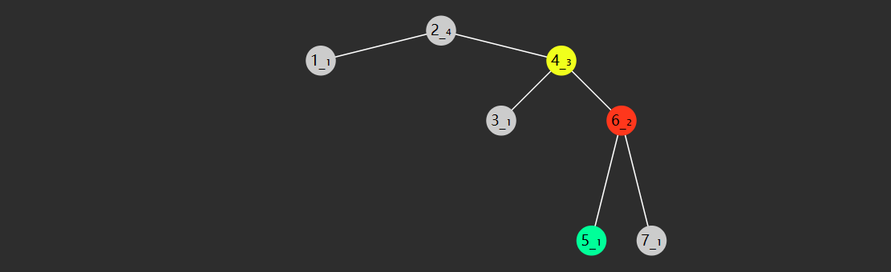
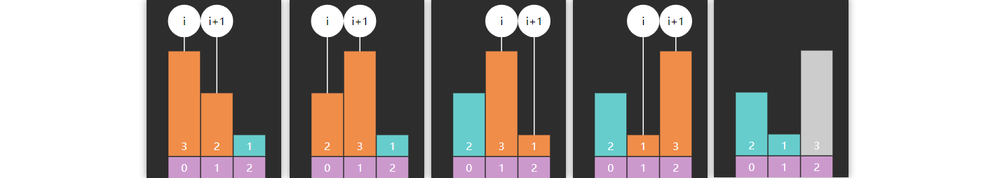
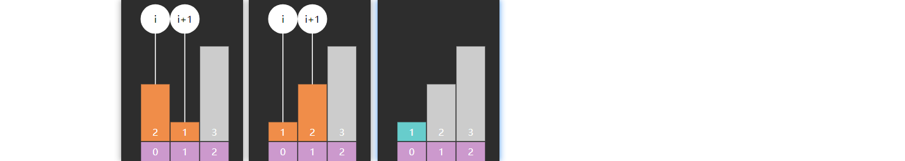

一. 基础算法 #
1. 常见查找算法 #
查找算法是一种在数据集中寻找特定数据项的方法。通常，数据集是在计算机程序中存储的，例如数组、链表或散列表。在编写程序时，查找算法是非常重要的，它有助于快速找到所需的数据。在本文中，我们将介绍一些基本的查找算法及其特点。
线性查找 #
线性查找也称为顺序查找，是一种最简单的查找算法。在这种算法中，我们从数据集的开头开始，逐个比较每个数据项，以寻找要查找的数据。如果我们找到了目标数据，查找过程就结束了。如果我们到达数据集的末尾，仍然找不到目标数据，则可以认为它不存在于数据集中。
线性查找的时间复杂度是O(n)，其中n是数据集的大小。因此，它在大型数据集中可能会很慢。然而，在小型数据集中，它仍然是一种非常有用的算法。
二分查找 #
二分查找也称为折半查找，是一种更快速的查找算法。但前提是，数据集必须已经排序。在二分查找中，我们取数据集的中间值，然后将目标与中间值进行比较。如果目标小于中间值，则在左侧子集中继续查找；如果目标大于中间值，则在右侧子集中继续查找。每次比较都会缩小要搜索的数据集的大小。
二分查找的时间复杂度是O(log n)，其中n是数据集的大小。这种算法在大型数据集中非常有效，但在小型数据集中可能并不是最快的选择。
哈希表查找 #
哈希表查找也称为散列表查找，是另一种常见的查找算法。它利用哈希函数将数据项映射到散列表中的位置。在查找过程中，我们只需通过哈希函数计算目标数据的位置，然后检查该位置是否包含目标数据。
哈希表查找的时间复杂度是O(1)。这使得它成为大型数据集中最快的查找算法之一。但是，哈希表查找的效率取决于哈希函数的质量。如果两个数据项映射到相同的位置，就会发生哈希冲突，这可能会导致性能下降。
小结 #
在编写程序时，我们需要选择适合数据集大小和其他要求的最佳查找算法。例如，如果数据集很小，则线性查找可能是最快的选择；如果数据集已经排序，则二分查找是非常有用的。然而，在大型数据集中，哈希表查找通常是最好的选择。了解不同类型的查找算法及其特点可以帮助我们在编写程序时做出明智的选择。
2. 高效查找相关数据结构 #
不管是之前学过的数组、链表、队列、还是栈，这些线性结构中，如果想在其中查找一个元素，效率是比较慢的，只有$O(N)$，因此如果你的需求是实现数据的快速查找，那么就需要新的数据结构支持。
还记得最先介绍的那个二分查找算法吗？它的查找效率能够达到 $O(\log{N})$，是不是还不错？不过呢，它需要对数组事先排好序，而排序的成本是比较高的。那么有没有一个折中的办法呢？有，那就是接下来要给大家介绍的二叉搜索树，它插入元素后，自然就是排好序的，接下来的查询也自然而然可以应用二分查找算法进行高效搜索。
1) 二叉搜索树 #
历史 #
二叉搜索树最早是由Bernoulli兄弟在18世纪中提出的，但是真正推广和应用该数据结构的是1960年代的D.L. Gries。他的著作《The Science of Programming》中详细介绍了二叉搜索树的实现和应用。
在计算机科学的发展中，二叉搜索树成为了一种非常基础的数据结构，被广泛应用在各种领域，包括搜索、排序、数据库索引等。随着计算机算力的提升和对数据结构的深入研究，二叉搜索树也不断被优化和扩展，例如AVL树、红黑树等。
特性 #
二叉搜索树（也称二叉排序树）是符合下面特征的二叉树：
- 树节点增加 key 属性，用来比较谁大谁小，key 不可以重复
- 对于任意一个树节点，它的 key 比左子树的 key 都大，同时也比右子树的 key 都小，例如下图所示

轻易看出要查找 7 （从根开始）自然就可应用二分查找算法，只需三次比较
- 与 4 比，较之大，向右找
- 与 6 比，较之大，继续向右找
- 与 7 比，找到
查找的时间复杂度与树高相关，插入、删除也是如此。
- 如果这棵树长得还不赖（左右平衡）上图，那么时间复杂度均是 $O(\log{N})$
- 当然，这棵树如果长得丑（左右高度相差过大）下图，那么这时是最糟的情况，时间复杂度是 $O(N)$

注：
- 二叉搜索树 - 英文 binary search tree，简称 BST
- 二叉排序树 - 英文 binary ordered tree 或 binary sorted tree
定义节点 #
static class BSTNode {
int key; // 若希望任意类型作为 key, 则后续可以将其设计为 Comparable 接口
Object value;
BSTNode left;
BSTNode right;
public BSTNode(int key) {
this.key = key;
this.value = key;
}
public BSTNode(int key, Object value) {
this.key = key;
this.value = value;
}
public BSTNode(int key, Object value, BSTNode left, BSTNode right) {
this.key = key;
this.value = value;
this.left = left;
this.right = right;
}
}
查询 #
递归实现
public Object get(int key) {
return doGet(root, key);
}
private Object doGet(BSTNode node, int key) {
if (node == null) {
return null; // 没找到
}
if (key < node.key) {
return doGet(node.left, key); // 向左找
} else if (node.key < key) {
return doGet(node.right, key); // 向右找
} else {
return node.value; // 找到了
}
}
非递归实现
public Object get(int key) {
BSTNode node = root;
while (node != null) {
if (key < node.key) {
node = node.left;
} else if (node.key < key) {
node = node.right;
} else {
return node.value;
}
}
return null;
}
Comparable #
如果希望让除 int 外更多的类型能够作为 key，一种方式是 key 必须实现 Comparable 接口。
public class BSTTree2<T extends Comparable<T>> {
static class BSTNode<T> {
T key; // 若希望任意类型作为 key, 则后续可以将其设计为 Comparable 接口
Object value;
BSTNode<T> left;
BSTNode<T> right;
public BSTNode(T key) {
this.key = key;
this.value = key;
}
public BSTNode(T key, Object value) {
this.key = key;
this.value = value;
}
public BSTNode(T key, Object value, BSTNode<T> left, BSTNode<T> right) {
this.key = key;
this.value = value;
this.left = left;
this.right = right;
}
}
BSTNode<T> root;
public Object get(T key) {
return doGet(root, key);
}
private Object doGet(BSTNode<T> node, T key) {
if (node == null) {
return null;
}
int result = node.key.compareTo(key);
if (result > 0) {
return doGet(node.left, key);
} else if (result < 0) {
return doGet(node.right, key);
} else {
return node.value;
}
}
}
还有一种做法不要求 key 实现 Comparable 接口，而是在构造 Tree 时把比较规则作为 Comparator 传入，将来比较 key 大小时都调用此 Comparator 进行比较，这种做法可以参考 Java 中的 java.util.TreeMap
最小 #
递归实现
public Object min() {
return doMin(root);
}
public Object doMin(BSTNode node) {
if (node == null) {
return null;
}
// 左边已走到头
if (node.left == null) {
return node.value;
}
return doMin(node.left);
}
非递归实现
public Object min() {
if (root == null) {
return null;
}
BSTNode p = root;
// 左边未走到头
while (p.left != null) {
p = p.left;
}
return p.value;
}
最大 #
递归实现
public Object max() {
return doMax(root);
}
public Object doMax(BSTNode node) {
if (node == null) {
return null;
}
// 右边已走到头
if (node.left == null) {
return node.value;
}
return doMin(node.right);
}
非递归实现
public Object max() {
if (root == null) {
return null;
}
BSTNode p = root;
// 右边未走到头
while (p.right != null) {
p = p.right;
}
return p.value;
}
新增 #
递归实现
public void put(int key, Object value) {
root = doPut(root, key, value);
}
private BSTNode doPut(BSTNode node, int key, Object value) {
if (node == null) {
return new BSTNode(key, value);
}
if (key < node.key) {
node.left = doPut(node.left, key, value);
} else if (node.key < key) {
node.right = doPut(node.right, key, value);
} else {
node.value = value;
}
return node;
}
- 若找到 key，走 else 更新找到节点的值
- 若没找到 key，走第一个 if，创建并返回新节点
- 返回的新节点，作为上次递归时 node 的左孩子或右孩子
- 缺点是，会有很多不必要的赋值操作
非递归实现
public void put(int key, Object value) {
BSTNode node = root;
BSTNode parent = null;
while (node != null) {
parent = node;
if (key < node.key) {
node = node.left;
} else if (node.key < key) {
node = node.right;
} else {
// 1. key 存在则更新
node.value = value;
return;
}
}
// 2. key 不存在则新增
if (parent == null) {
root = new BSTNode(key, value);
} else if (key < parent.key) {
parent.left = new BSTNode(key, value);
} else {
parent.right = new BSTNode(key, value);
}
}
前驱后继 #

一个节点的前驱（前任）节点是指比它小的节点中，最大的那个
一个节点的后继（后任）节点是指比它大的节点中，最小的那个
例如上图中
- 1 没有前驱，后继是 2
- 2 前驱是 1，后继是 3
- 3 前驱是 2，后继是 4
- …
简单的办法是中序遍历，即可获得排序结果，此时很容易找到前驱后继
要效率更高，需要研究一下规律，找前驱分成 2 种情况：
- 节点有左子树，此时前驱节点就是左子树的最大值，图中属于这种情况的有
- 2 的前驱是1
- 4 的前驱是 3
- 6 的前驱是 5
- 7 的前驱是 6
- 节点没有左子树，若离它最近的祖先自从左而来，此祖先即为前驱，如
- 3 的祖先 2 自左而来，前驱 2
- 5 的祖先 4 自左而来，前驱 4
- 8 的祖先 7 自左而来，前驱 7
- 1 没有这样的祖先，前驱 null
找后继也分成 2 种情况

- 节点有右子树，此时后继节点即为右子树的最小值，如
- 2 的后继 3
- 3 的后继 4
- 5 的后继 6
- 7 的后继 8
- 节点没有右子树，若离它最近的祖先自从右而来，此祖先即为后继，如
- 1 的祖先 2 自右而来，后继 2
- 4 的祖先 5 自右而来，后继 5
- 6 的祖先 7 自右而来，后继 7
- 8 没有这样的祖先，后继 null
public Object predecessor(int key) {
BSTNode ancestorFromLeft = null;
BSTNode p = root;
while (p != null) {
if (key < p.key) {
p = p.left;
} else if (p.key < key) {
ancestorFromLeft = p;
p = p.right;
} else {
break;
}
}
if (p == null) {
return null;
}
// 情况1 - 有左孩子
if (p.left != null) {
return max(p.left);
}
// 情况2 - 有祖先自左而来
return ancestorFromLeft != null ? ancestorFromLeft.value : null;
}
public Object successor(int key) {
BSTNode ancestorFromRight = null;
BSTNode p = root;
while (p != null) {
if (key < p.key) {
ancestorFromRight = p;
p = p.left;
} else if (p.key < key) {
p = p.right;
} else {
break;
}
}
if (p == null) {
return null;
}
// 情况1 - 有右孩子
if (p.right != null) {
return min(p.right);
}
// 情况2 - 有祖先自右而来
return ancestorFromRight != null ? ancestorFromRight.value : null;
}
删除 #
要删除某节点（称为 D），必须先找到被删除节点的父节点，这里称为 Parent
- 删除节点没有左孩子，将右孩子托孤给 Parent
- 删除节点没有右孩子，将左孩子托孤给 Parent
- 删除节点左右孩子都没有，已经被涵盖在情况1、情况2 当中，把 null 托孤给 Parent
- 删除节点左右孩子都有，可以将它的后继节点（称为 S）托孤给 Parent，设 S 的父亲为 SP，又分两种情况
- SP 就是被删除节点，此时 D 与 S 紧邻，只需将 S 托孤给 Parent
- SP 不是被删除节点，此时 D 与 S 不相邻，此时需要将 S 的后代托孤给 SP，再将 S 托孤给 Parent
非递归实现
/**
* <h3>根据关键字删除</h3>
*
* @param key 关键字
* @return 被删除关键字对应值
*/
public Object delete(int key) {
BSTNode p = root;
BSTNode parent = null;
while (p != null) {
if (key < p.key) {
parent = p;
p = p.left;
} else if (p.key < key) {
parent = p;
p = p.right;
} else {
break;
}
}
if (p == null) {
return null;
}
// 删除操作
if (p.left == null) {
shift(parent, p, p.right); // 情况1
} else if (p.right == null) {
shift(parent, p, p.left); // 情况2
} else {
// 情况4
// 4.1 被删除节点找后继
BSTNode s = p.right;
BSTNode sParent = p; // 后继父亲
while (s.left != null) {
sParent = s;
s = s.left;
}
// 4.2 删除和后继不相邻, 处理后继的后事
if (sParent != p) {
shift(sParent, s, s.right); // 不可能有左孩子
s.right = p.right;
}
// 4.3 后继取代被删除节点
shift(parent, p, s);
s.left = p.left;
}
return p.value;
}
/**
* 托孤方法
*
* @param parent 被删除节点的父亲
* @param deleted 被删除节点
* @param child 被顶上去的节点
*/
// 只考虑让 n1父亲的左或右孩子指向 n2, n1自己的左或右孩子并未在方法内改变
private void shift(BSTNode parent, BSTNode deleted, BSTNode child) {
if (parent == null) {
root = child;
} else if (deleted == parent.left) {
parent.left = child;
} else {
parent.right = child;
}
}
递归实现
public Object delete(int key) {
ArrayList<Object> result = new ArrayList<>();
root = doDelete(root, key, result);
return result.isEmpty() ? null : result.get(0);
}
public BSTNode doDelete(BSTNode node, int key, ArrayList<Object> result) {
if (node == null) {
return null;
}
if (key < node.key) {
node.left = doDelete(node.left, key, result);
return node;
}
if (node.key < key) {
node.right = doDelete(node.right, key, result);
return node;
}
result.add(node.value);
if (node.left != null && node.right != null) {
BSTNode s = node.right;
while (s.left != null) {
s = s.left;
}
s.right = doDelete(node.right, s.key, new ArrayList<>());
s.left = node.left;
return s;
}
return node.left != null ? node.left : node.right;
}
说明
ArrayList<Object> result用来保存被删除节点的值- 第二、第三个 if 对应没找到的情况，继续递归查找和删除，注意后续的 doDelete 返回值代表删剩下的，因此需要更新
- 最后一个 return 对应删除节点只有一个孩子的情况，返回那个不为空的孩子，待删节点自己因没有返回而被删除
- 第四个 if 对应删除节点有两个孩子的情况，此时需要找到后继节点，并在待删除节点的右子树中删掉后继节点，最后用后继节点替代掉待删除节点返回，别忘了改变后继节点的左右指针
找小的 #
public List<Object> less(int key) {
ArrayList<Object> result = new ArrayList<>();
BSTNode p = root;
LinkedList<BSTNode> stack = new LinkedList<>();
while (p != null || !stack.isEmpty()) {
if (p != null) {
stack.push(p);
p = p.left;
} else {
BSTNode pop = stack.pop();
if (pop.key < key) {
result.add(pop.value);
} else {
break;
}
p = pop.right;
}
}
return result;
}
找大的 #
public List<Object> greater(int key) {
ArrayList<Object> result = new ArrayList<>();
BSTNode p = root;
LinkedList<BSTNode> stack = new LinkedList<>();
while (p != null || !stack.isEmpty()) {
if (p != null) {
stack.push(p);
p = p.left;
} else {
BSTNode pop = stack.pop();
if (pop.key > key) {
result.add(pop.value);
}
p = pop.right;
}
}
return result;
}
但这样效率不高，可以用 RNL 遍历
注：
- Pre-order, NLR
- In-order, LNR
- Post-order, LRN
- Reverse pre-order, NRL
- Reverse in-order, RNL
- Reverse post-order, RLN
public List<Object> greater(int key) {
ArrayList<Object> result = new ArrayList<>();
BSTNode p = root;
LinkedList<BSTNode> stack = new LinkedList<>();
while (p != null || !stack.isEmpty()) {
if (p != null) {
stack.push(p);
p = p.right;
} else {
BSTNode pop = stack.pop();
if (pop.key > key) {
result.add(pop.value);
} else {
break;
}
p = pop.left;
}
}
return result;
}
找之间 #
public List<Object> between(int key1, int key2) {
ArrayList<Object> result = new ArrayList<>();
BSTNode p = root;
LinkedList<BSTNode> stack = new LinkedList<>();
while (p != null || !stack.isEmpty()) {
if (p != null) {
stack.push(p);
p = p.left;
} else {
BSTNode pop = stack.pop();
if (pop.key >= key1 && pop.key <= key2) {
result.add(pop.value);
} else if (pop.key > key2) {
break;
}
p = pop.right;
}
}
return result;
}
小结 #
优点：
- 如果每个节点的左子树和右子树的大小差距不超过一，可以保证搜索操作的时间复杂度是 O(log n)，效率高。
- 插入、删除结点等操作也比较容易实现，效率也比较高。
- 对于有序数据的查询和处理，二叉查找树非常适用，可以使用中序遍历得到有序序列。
缺点：
- 如果输入的数据是有序或者近似有序的，就会出现极度不平衡的情况，可能导致搜索效率下降，时间复杂度退化成O(n)。
- 对于频繁地插入、删除操作，需要维护平衡二叉查找树，例如红黑树、AVL 树等，否则搜索效率也会下降。
- 对于存在大量重复数据的情况，需要做相应的处理，否则会导致树的深度增加，搜索效率下降。
- 对于结点过多的情况，由于树的空间开销较大，可能导致内存消耗过大，不适合对内存要求高的场景。
2) AVL 树 #
历史 #
AVL 树是一种自平衡二叉搜索树，由托尔·哈斯特罗姆在 1960 年提出并在 1962 年发表。它的名字来源于发明者的名字：Adelson-Velsky 和 Landis，他们是苏联数学家，于 1962 年发表了一篇论文，详细介绍了 AVL 树的概念和性质。
在二叉搜索树中，如果插入的元素按照特定的顺序排列，可能会导致树变得非常不平衡，从而降低搜索、插入和删除的效率。为了解决这个问题，AVL 树通过在每个节点中维护一个平衡因子来确保树的平衡。平衡因子是左子树的高度减去右子树的高度。如果平衡因子的绝对值大于等于 2，则通过旋转操作来重新平衡树。
AVL 树是用于存储有序数据的一种重要数据结构，它是二叉搜索树的一种改进和扩展。它不仅能够提高搜索、插入和删除操作的效率，而且还能够确保树的深度始终保持在 O(log n) 的水平。随着计算机技术的不断发展，AVL 树已经成为了许多高效算法和系统中必不可少的一种基础数据结构。
前面介绍过，如果一棵二叉搜索树长的不平衡，那么查询的效率会受到影响，如下图
通过旋转可以让树重新变得平衡，并且不会改变二叉搜索树的性质（即左边仍然小，右边仍然大）

如何判断失衡？ #
如果一个节点的左右孩子，高度差超过 1，则此节点失衡，才需要旋转
处理高度 #
如何得到节点高度？一种方式之前做过的一道题目：E05. 求二叉树的最大深度（高度），但由于求高度是一个非常频繁的操作，因此将高度作为节点的一个属性，将来新增或删除时及时更新，默认为 1（按力扣说法）
static class AVLNode {
int height = 1;
int key;
Object value;
AVLNode left;
AVLNode right;
// ...
}
求高度代码
这里加入了 height 函数方便求节点为 null 时的高度
private int height(AVLNode node) {
return node == null ? 0 : node.height;
}
更新高度代码
将来新增、删除、旋转时，高度都可能发生变化，需要更新。下面是更新高度的代码
private void updateHeight(AVLNode node) {
node.height = Integer.max(height(node.left), height(node.right)) + 1;
}
何时触发失衡判断？ #
定义平衡因子（balance factor）如下 $$ 平衡因子 = 左子树高度 - 右子树高度 $$ 当平衡因子
- bf = 0，1，-1 时，表示左右平衡
- bf > 1 时，表示左边太高
- bf < -1 时，表示右边太高
对应代码
private int bf(AVLNode node) {
return height(node.left) - height(node.right);
}
当插入新节点，或删除节点时，引起高度变化时，例如

目前此树平衡，当再插入一个 4 时，节点们的高度都产生了相应的变化，8 节点失衡了

在比如说，下面这棵树一开始也是平衡的

当删除节点 8 时，节点们的高度都产生了相应的变化，6 节点失衡了

失衡的四种情况 #
LL

- 失衡节点（图中 8 红色）的 bf > 1，即左边更高
- 失衡节点的左孩子（图中 6）的 bf >= 0 即左孩子这边也是左边更高或等高
LR

- 失衡节点（图中 8）的 bf > 1，即左边更高
- 失衡节点的左孩子（图中 6 红色）的 bf < 0 即左孩子这边是右边更高
对称的还有两种情况
RL

- 失衡节点（图中 3）的 bf <-1，即右边更高
- 失衡节点的右孩子（图中 6 红色）的 bf > 0，即右孩子这边左边更高
RR

- 失衡节点（图中 3）的 bf <-1，即右边更高
- 失衡节点的右孩子（图中 6 红色）的 bf <= 0，即右孩子这边右边更高或等高
解决失衡 #
失衡可以通过树的旋转解决。什么是树的旋转呢？它是在不干扰元素顺序的情况下更改结构，通常用来让树的高度变得平衡。
观察下面一棵二叉搜索树，可以看到，旋转后，并未改变树的左小右大特性，但根、父、孩子节点都发生了变化
4 2
/ \ 4 right / \
2 5 --------------------> 1 4
/ \ <-------------------- / \
1 3 2 left 3 5
右旋
旋转前

- 红色节点，旧根（失衡节点）
- 黄色节点，旧根的左孩子，将来作为新根，旧根是它右孩子
- 绿色节点，新根的右孩子，将来要换爹作为旧根的左孩子
旋转后

代码
private AVLNode rightRotate(AVLNode red) {
AVLNode yellow = red.left;
AVLNode green = yellow.right;
yellow.right = red;
red.left = green;
return yellow;
}
左旋
旋转前

- 红色节点，旧根（失衡节点）
- 黄色节点，旧根的右孩子，将来作为新根，旧根是它左孩子
- 绿色节点，新根的左孩子，将来要换爹作为旧根的右孩子
旋转后

代码
private AVLNode leftRotate(AVLNode red) {
AVLNode yellow = red.right;
AVLNode green = yellow.left;
yellow.left = red;
red.right = green;
return yellow;
}
左右旋
指先左旋左子树，再右旋根节点（失衡），这时一次旋转并不能解决失衡

左子树旋转后

根右旋前

根右旋后

代码
private AVLNode leftRightRotate(AVLNode root) {
root.left = leftRotate(root.left);
return rightRotate(root);
}
右左旋
指先右旋右子树，再左旋根节点（失衡）

右子树右旋后

根左旋前

根左旋后

代码
private AVLNode rightLeftRotate(AVLNode root) {
root.right = rightRotate(root.right);
return leftRotate(root);
}
判断及调整平衡代码
private AVLNode balance(AVLNode node) {
if (node == null) {
return null;
}
int bf = bf(node);
if (bf > 1 && bf(node.left) >= 0) {
return rightRotate(node);
} else if (bf > 1 && bf(node.left) < 0) {
return rightLeftRotate(node);
} else if (bf < -1 && bf(node.right) > 0) {
return leftRightRotate(node);
} else if (bf < -1 && bf(node.right) <= 0) {
return rightRotate(node);
}
return node;
}
以上四种旋转代码里，都需要更新高度，需要更新的节点是红色、黄色，而绿色节点高度不变
新增 #
public void put(int key, Object value) {
root = doPut(root, key, value);
}
private AVLNode doPut(AVLNode node, int key, Object value) {
if (node == null) {
return new AVLNode(key, value);
}
if (key == node.key) {
node.value = value;
return node;
}
if (key < node.key) {
node.left = doPut(node.left, key, value);
} else {
node.right = doPut(node.right, key, value);
}
updateHeight(node);
return balance(node);
}
删除 #
public void remove(int key) {
root = doRemove(root, key);
}
private AVLNode doRemove(AVLNode node, int key) {
if (node == null) {
return null;
}
if (key < node.key) {
node.left = doRemove(node.left, key);
} else if (node.key < key) {
node.right = doRemove(node.right, key);
} else {
if (node.left == null) {
node = node.right;
} else if (node.right == null) {
node = node.left;
} else {
AVLNode s = node.right;
while (s.left != null) {
s = s.left;
}
s.right = doRemove(node.right, s.key);
s.left = node.left;
node = s;
}
}
if (node == null) {
return null;
}
updateHeight(node);
return balance(node);
}
完整代码备份
public class AVLTree {
static class AVLNode {
int height = 1;
int key;
Object value;
AVLNode left;
AVLNode right;
public AVLNode(int key) {
this.key = key;
}
public AVLNode(int key, Object value) {
this.key = key;
this.value = value;
}
public AVLNode(int key, Object value, AVLNode left, AVLNode right) {
this.key = key;
this.value = value;
this.left = left;
this.right = right;
}
}
AVLNode root;
private AVLNode leftRotate(AVLNode p) {
AVLNode r = p.right;
AVLNode b = r.left;
r.left = p;
p.right = b;
updateHeight(p);
updateHeight(r);
return r;
}
private void updateHeight(AVLNode node) {
node.height = Integer.max(height(node.left), height(node.right)) + 1;
}
private AVLNode rightRotate(AVLNode r) {
AVLNode a = r.left;
AVLNode b = a.right;
a.right = r;
r.left = b;
updateHeight(r);
updateHeight(a);
return a;
}
private AVLNode leftRightRotate(AVLNode p) {
AVLNode r = p.left;
p.left = leftRotate(r);
return rightRotate(p);
}
private AVLNode rightLeftRotate(AVLNode p) {
AVLNode r = p.right;
p.right = rightRotate(r);
return leftRotate(p);
}
private int height(AVLNode node) {
return node == null ? 0 : node.height;
}
public void remove(int key) {
root = doRemove(root, key);
}
private AVLNode doRemove(AVLNode node, int key) {
if (node == null) {
return null;
}
if (key < node.key) {
node.left = doRemove(node.left, key);
} else if (node.key < key) {
node.right = doRemove(node.right, key);
} else {
if (node.left == null) {
node = node.right;
} else if (node.right == null) {
node = node.left;
} else {
AVLNode s = node.right;
while (s.left != null) {
s = s.left;
}
s.right = doRemove(node.right, s.key);
s.left = node.left;
node = s;
}
}
if (node == null) {
return null;
}
updateHeight(node);
return balance(node);
}
public void put(int key, Object value) {
root = doPut(root, key, value);
}
private AVLNode doPut(AVLNode node, int key, Object value) {
if (node == null) {
return new AVLNode(key, value);
}
if (key == node.key) {
node.value = value;
return node;
}
if (key < node.key) {
node.left = doPut(node.left, key, value);
} else {
node.right = doPut(node.right, key, value);
}
updateHeight(node);
return balance(node);
}
private int bf(AVLNode node) {
return height(node.left) - height(node.right);
}
private AVLNode balance(AVLNode node) {
if (node == null) {
return null;
}
int bf = bf(node);
if (bf > 1 && bf(node.left) >= 0) {
return rightRotate(node);
} else if (bf > 1 && bf(node.left) < 0) {
return rightLeftRotate(node);
} else if (bf < -1 && bf(node.right) > 0) {
return leftRightRotate(node);
} else if (bf < -1 && bf(node.right) <= 0) {
return rightRotate(node);
}
return node;
}
}
小结 #
AVL树的优点：
- AVL树是一种自平衡树，保证了树的高度平衡，从而保证了树的查询和插入操作的时间复杂度均为O(logn)。
- 相比于一般二叉搜索树，AVL树对查询效率的提升更为显著，因为其左右子树高度的差值不会超过1，避免了二叉搜索树退化为链表的情况，使得整棵树的高度更低。
- AVL树的删除操作比较简单，只需要像插入一样旋转即可，在旋转过程中树的平衡性可以得到维护。
AVL树的缺点：
- AVL树每次插入或删除节点时需要进行旋转操作，这个操作比较耗时，因此在一些应用中不太适用。
- 在AVL树进行插入或删除操作时，为保持树的平衡需要不断进行旋转操作，在一些高并发环节和大数据量环境下，这可能会导致多余的写锁导致性能瓶颈。
- AVL树的旋转操作相对较多，因此在一些应用中可能会造成较大的空间浪费。
3) 红黑树 #
历史 #
红黑树是一种自平衡二叉查找树，最早由一位名叫Rudolf Bayer的德国计算机科学家于1972年发明。然而，最初的树形结构不是现在的红黑树，而是一种称为B树的结构，它是一种多叉树，可用于在磁盘上存储大量数据。
在1980年代早期，计算机科学家Leonard Adleman和Daniel Sleator推广了红黑树，并证明了它的自平衡性和高效性。从那时起，红黑树成为了最流行的自平衡二叉查找树之一，并被广泛应用于许多领域，如编译器、操作系统、数据库等。
红黑树的名字来源于红色节点和黑色节点的交替出现，它们的颜色是用来维护树的平衡性的关键。它们的颜色具有特殊的意义，黑色节点代表普通节点，而红色节点代表一个新添加的节点，它们必须满足一些特定的规则才能维持树的平衡性。
红黑树也是一种自平衡的二叉搜索树，较之 AVL，插入和删除时旋转次数更少
红黑树特性 #
- 所有节点都有两种颜色：红:red_circle:、黑:black_circle:
- 所有 null 视为黑色:black_circle:
- 红色:red_circle:节点不能相邻
- 根节点是黑色:black_circle:
- 从根到任意一个叶子节点，路径中的黑色:black_circle:节点数一样
插入情况 #
插入节点均视为红色:red_circle:
case 1：插入节点为根节点，将根节点变黑:black_circle:
case 2：插入节点的父亲若为黑色:black_circle:，树的红黑性质不变，无需调整
插入节点的父亲为红色:red_circle:，触发红红相邻
case 3：叔叔为红色:red_circle:
-
父亲变为黑色:black_circle:，为了保证黑色平衡，连带的叔叔也变为黑色:black_circle:
-
祖父如果是黑色不变，会造成这颗子树黑色过多，因此祖父节点变为红色:red_circle:
-
祖父如果变成红色，可能会接着触发红红相邻，因此对将祖父进行递归调整
case 4：叔叔为黑色:black_circle:
- 父亲为左孩子，插入节点也是左孩子，此时即 LL 不平衡
- 让父亲变黑:black_circle:，为了保证这颗子树黑色不变，将祖父变成红:red_circle:，但叔叔子树少了一个黑色
- 祖父右旋，补齐一个黑色给叔叔，父亲旋转上去取代祖父，由于它是黑色，不会再次触发红红相邻
- 父亲为左孩子，插入节点是右孩子，此时即 LR 不平衡
- 父亲左旋，变成 LL 情况，按 1. 来后续处理
- 父亲为右孩子，插入节点也是右孩子，此时即 RR 不平衡
- 让父亲变黑:black_circle:，为了保证这颗子树黑色不变，将祖父变成红:red_circle:，但叔叔子树少了一个黑色
- 祖父左旋，补齐一个黑色给叔叔，父亲旋转上去取代祖父，由于它是黑色，不会再次触发红红相邻
- 父亲为右孩子，插入节点是左孩子，此时即 RL 不平衡
- 父亲右旋，变成 RR 情况，按 3. 来后续处理
删除情况 #
case0：如果删除节点有两个孩子
- 交换删除节点和后继节点的 key，value，递归删除后继节点，直到该节点没有孩子或只剩一个孩子
如果删除节点没有孩子或只剩一个孩子
case 1：删的是根节点
- 删完了，直接将 root = null
- 用剩余节点替换了根节点的 key，value，根节点孩子 = null，颜色保持黑色:black_circle:不变
删黑色会失衡，删红色不会失衡，但删黑色有一种简单情况
case 2：删的是黑:black_circle:，剩下的是红:red_circle:，剩下这个红节点变黑:black_circle:
删除节点和剩下节点都是黑:black_circle:，触发双黑，双黑意思是，少了一个黑
case 3：被调整节点的兄弟为红:red_circle:，此时两个侄子定为黑 :black_circle:
- 删除节点是左孩子，父亲左旋
- 删除节点是右孩子，父亲右旋
- 父亲和兄弟要变色，保证旋转后颜色平衡
- 旋转的目的是让黑侄子变为删除节点的黑兄弟，对删除节点再次递归，进入 case 4 或 case 5
case 4：被调整节点的兄弟为黑:black_circle:，两个侄子都为黑 :black_circle:
- 将兄弟变红:red_circle:，目的是将删除节点和兄弟那边的黑色高度同时减少 1
- 如果父亲是红:red_circle:，则需将父亲变为黑，避免红红，此时路径黑节点数目不变
- 如果父亲是黑:black_circle:，说明这条路径还是少黑，再次让父节点触发双黑
case 5：被调整节点的兄弟为黑:black_circle:，至少一个红:red_circle:侄子
- 如果兄弟是左孩子，左侄子是红:red_circle:，LL 不平衡
- 将来删除节点这边少个黑，所以最后旋转过来的父亲需要变成黑:black_circle:，平衡起见，左侄子也是黑:black_circle:
- 原来兄弟要成为父亲，需要保留父亲颜色
- 如果兄弟是左孩子，右侄子是红:red_circle:，LR 不平衡
- 将来删除节点这边少个黑，所以最后旋转过来的父亲需要变成黑:black_circle:
- 右侄子会取代原来父亲，因此它保留父亲颜色
- 兄弟已经是黑了:black_circle:，无需改变
- 如果兄弟是右孩子，右侄子是红:red_circle:，RR 不平衡
- 将来删除节点这边少个黑，所以最后旋转过来的父亲需要变成黑:black_circle:，平衡起见，右侄子也是黑:black_circle:
- 原来兄弟要成为父亲，需要保留父亲颜色
- 如果兄弟是右孩子，左侄子是红:red_circle:，RL 不平衡
- 将来删除节点这边少个黑，所以最后旋转过来的父亲需要变成黑:black_circle:
- 左侄子会取代原来父亲，因此它保留父亲颜色
- 兄弟已经是黑了:black_circle:，无需改变
完整代码 #
package com.itheima.datastructure.redblacktree;
import static com.itheima.datastructure.redblacktree.RedBlackTree.Color.BLACK;
import static com.itheima.datastructure.redblacktree.RedBlackTree.Color.RED;
/**
* <h3>红黑树</h3>
*/
public class RedBlackTree {
enum Color {
RED, BLACK;
}
Node root;
static class Node {
int key;
Object value;
Node left;
Node right;
Node parent; // 父节点
Color color = RED; // 颜色
public Node(int key, Object value) {
this.key = key;
this.value = value;
}
public Node(int key) {
this.key = key;
}
public Node(int key, Color color) {
this.key = key;
this.color = color;
}
public Node(int key, Color color, Node left, Node right) {
this.key = key;
this.color = color;
this.left = left;
this.right = right;
if (left != null) {
left.parent = this;
}
if (right != null) {
right.parent = this;
}
}
// 是否是左孩子
boolean isLeftChild() {
return parent != null && parent.left == this;
}
// 叔叔
Node uncle() {
if (parent == null || parent.parent == null) {
return null;
}
if (parent.isLeftChild()) {
return parent.parent.right;
} else {
return parent.parent.left;
}
}
// 兄弟
Node sibling() {
if (parent == null) {
return null;
}
if (this.isLeftChild()) {
return parent.right;
} else {
return parent.left;
}
}
}
// 判断红
boolean isRed(Node node) {
return node != null && node.color == RED;
}
// 判断黑
boolean isBlack(Node node) {
// return !isRed(node);
return node == null || node.color == BLACK;
}
// 右旋 1. parent 的处理 2. 旋转后新根的父子关系
private void rightRotate(Node pink) {
Node parent = pink.parent;
Node yellow = pink.left;
Node green = yellow.right;
if (green != null) {
green.parent = pink;
}
yellow.right = pink;
yellow.parent = parent;
pink.left = green;
pink.parent = yellow;
if (parent == null) {
root = yellow;
} else if (parent.left == pink) {
parent.left = yellow;
} else {
parent.right = yellow;
}
}
// 左旋
private void leftRotate(Node pink) {
Node parent = pink.parent;
Node yellow = pink.right;
Node green = yellow.left;
if (green != null) {
green.parent = pink;
}
yellow.left = pink;
yellow.parent = parent;
pink.right = green;
pink.parent = yellow;
if (parent == null) {
root = yellow;
} else if (parent.left == pink) {
parent.left = yellow;
} else {
parent.right = yellow;
}
}
/**
* 新增或更新
* <br>
* 正常增、遇到红红不平衡进行调整
*
* @param key 键
* @param value 值
*/
public void put(int key, Object value) {
Node p = root;
Node parent = null;
while (p != null) {
parent = p;
if (key < p.key) {
p = p.left;
} else if (p.key < key) {
p = p.right;
} else {
p.value = value; // 更新
return;
}
}
Node inserted = new Node(key, value);
if (parent == null) {
root = inserted;
} else if (key < parent.key) {
parent.left = inserted;
inserted.parent = parent;
} else {
parent.right = inserted;
inserted.parent = parent;
}
fixRedRed(inserted);
}
void fixRedRed(Node x) {
// case 1 插入节点是根节点，变黑即可
if (x == root) {
x.color = BLACK;
return;
}
// case 2 插入节点父亲是黑色，无需调整
if (isBlack(x.parent)) {
return;
}
/* case 3 当红红相邻，叔叔为红时
需要将父亲、叔叔变黑、祖父变红，然后对祖父做递归处理
*/
Node parent = x.parent;
Node uncle = x.uncle();
Node grandparent = parent.parent;
if (isRed(uncle)) {
parent.color = BLACK;
uncle.color = BLACK;
grandparent.color = RED;
fixRedRed(grandparent);
return;
}
// case 4 当红红相邻，叔叔为黑时
if (parent.isLeftChild() && x.isLeftChild()) { // LL
parent.color = BLACK;
grandparent.color = RED;
rightRotate(grandparent);
} else if (parent.isLeftChild()) { // LR
leftRotate(parent);
x.color = BLACK;
grandparent.color = RED;
rightRotate(grandparent);
} else if (!x.isLeftChild()) { // RR
parent.color = BLACK;
grandparent.color = RED;
leftRotate(grandparent);
} else { // RL
rightRotate(parent);
x.color = BLACK;
grandparent.color = RED;
leftRotate(grandparent);
}
}
/**
* 删除
* <br>
* 正常删、会用到李代桃僵技巧、遇到黑黑不平衡进行调整
*
* @param key 键
*/
public void remove(int key) {
Node deleted = find(key);
if (deleted == null) {
return;
}
doRemove(deleted);
}
public boolean contains(int key) {
return find(key) != null;
}
// 查找删除节点
private Node find(int key) {
Node p = root;
while (p != null) {
if (key < p.key) {
p = p.left;
} else if (p.key < key) {
p = p.right;
} else {
return p;
}
}
return null;
}
// 查找剩余节点
private Node findReplaced(Node deleted) {
if (deleted.left == null && deleted.right == null) {
return null;
}
if (deleted.left == null) {
return deleted.right;
}
if (deleted.right == null) {
return deleted.left;
}
Node s = deleted.right;
while (s.left != null) {
s = s.left;
}
return s;
}
// 处理双黑 (case3、case4、case5)
private void fixDoubleBlack(Node x) {
if (x == root) {
return;
}
Node parent = x.parent;
Node sibling = x.sibling();
// case 3 兄弟节点是红色
if (isRed(sibling)) {
if (x.isLeftChild()) {
leftRotate(parent);
} else {
rightRotate(parent);
}
parent.color = RED;
sibling.color = BLACK;
fixDoubleBlack(x);
return;
}
if (sibling != null) {
// case 4 兄弟是黑色, 两个侄子也是黑色
if (isBlack(sibling.left) && isBlack(sibling.right)) {
sibling.color = RED;
if (isRed(parent)) {
parent.color = BLACK;
} else {
fixDoubleBlack(parent);
}
}
// case 5 兄弟是黑色, 侄子有红色
else {
// LL
if (sibling.isLeftChild() && isRed(sibling.left)) {
rightRotate(parent);
sibling.left.color = BLACK;
sibling.color = parent.color;
}
// LR
else if (sibling.isLeftChild() && isRed(sibling.right)) {
sibling.right.color = parent.color;
leftRotate(sibling);
rightRotate(parent);
}
// RL
else if (!sibling.isLeftChild() && isRed(sibling.left)) {
sibling.left.color = parent.color;
rightRotate(sibling);
leftRotate(parent);
}
// RR
else {
leftRotate(parent);
sibling.right.color = BLACK;
sibling.color = parent.color;
}
parent.color = BLACK;
}
} else {
// @TODO 实际也不会出现，触发双黑后，兄弟节点不会为 null
fixDoubleBlack(parent);
}
}
private void doRemove(Node deleted) {
Node replaced = findReplaced(deleted);
Node parent = deleted.parent;
// 没有孩子
if (replaced == null) {
// case 1 删除的是根节点
if (deleted == root) {
root = null;
} else {
if (isBlack(deleted)) {
// 双黑调整
fixDoubleBlack(deleted);
} else {
// 红色叶子, 无需任何处理
}
if (deleted.isLeftChild()) {
parent.left = null;
} else {
parent.right = null;
}
deleted.parent = null;
}
return;
}
// 有一个孩子
if (deleted.left == null || deleted.right == null) {
// case 1 删除的是根节点
if (deleted == root) {
root.key = replaced.key;
root.value = replaced.value;
root.left = root.right = null;
} else {
if (deleted.isLeftChild()) {
parent.left = replaced;
} else {
parent.right = replaced;
}
replaced.parent = parent;
deleted.left = deleted.right = deleted.parent = null;
if (isBlack(deleted) && isBlack(replaced)) {
// @TODO 实际不会有这种情况 因为只有一个孩子时 被删除节点是黑色 那么剩余节点只能是红色不会触发双黑
fixDoubleBlack(replaced);
} else {
// case 2 删除是黑，剩下是红
replaced.color = BLACK;
}
}
return;
}
// case 0 有两个孩子 => 有一个孩子 或 没有孩子
int t = deleted.key;
deleted.key = replaced.key;
replaced.key = t;
Object v = deleted.value;
deleted.value = replaced.value;
replaced.value = v;
doRemove(replaced);
}
}
- 以上代码中的 TODO 未作改正
小结 #
| 维度 | 普通二叉搜索树 | AVL树 | 红黑树 |
|---|---|---|---|
| 查询 | 平均O(logn)，最坏O(n) | O(logn) | O(logn) |
| 插入 | 平均O(logn)，最坏O(n) | O(logn) | O(logn) |
| 删除 | 平均O(logn)，最坏O(n) | O(logn) | O(logn) |
| 平衡性 | 不平衡 | 严格平衡 | 近似平衡 |
| 结构 | 二叉树 | 自平衡的二叉树 | 具有红黑性质的自平衡二叉树 |
| 查找效率 | 低 | 高 | 高 |
| 插入删除效率 | 低 | 中等 | 高 |
普通二叉搜索树插入、删除、查询的时间复杂度与树的高度相关，因此在最坏情况下，时间复杂度为O(n)，而且容易退化成链表，查找效率低。
AVL树是一种高度平衡的二叉搜索树，其左右子树的高度差不超过1。因此，它能够在logn的平均时间内完成插入、删除、查询操作，但是在维护平衡的过程中，需要频繁地进行旋转操作，导致插入删除效率较低。
红黑树是一种近似平衡的二叉搜索树，它在保持高度平衡的同时，又能够保持较高的插入删除效率。红黑树通过节点着色和旋转操作来维护平衡。红黑树在维护平衡的过程中，能够进行较少的节点旋转操作，因此插入删除效率较高，并且查询效率也较高。
综上所述，红黑树具有较高的综合性能，是一种广泛应用的数据结构。
4) B 树 #
ai 问题列表
请用中文回答：B-树历史
请用中文回答：100万的数据使用 avl 树来存储，树高是多少?
请用中文回答：100万的数据，如果存储到B-树(最小度数是500)，那么树高大约是多少?
请用中文回答：B-树的特性有哪些？
历史 #
B树（B-Tree）结构是一种高效存储和查询数据的方法，它的历史可以追溯到1970年代早期。B树的发明人Rudolf Bayer和Edward M. McCreight分别发表了一篇论文介绍了B树。这篇论文是1972年发表于《ACM Transactions on Database Systems》中的，题目为"Organization and Maintenance of Large Ordered Indexes"。
这篇论文提出了一种能够高效地维护大型有序索引的方法，这种方法的主要思想是将每个节点扩展成多个子节点，以减少查找所需的次数。B树结构非常适合应用于磁盘等大型存储器的高效操作，被广泛应用于关系数据库和文件系统中。
B树结构有很多变种和升级版，例如B+树，B*树和SB树等。这些变种和升级版本都基于B树的核心思想，通过调整B树的参数和结构，提高了B树在不同场景下的性能表现。
总的来说，B树结构是一个非常重要的数据结构，为高效存储和查询大量数据提供了可靠的方法。它的历史可以追溯到上个世纪70年代，而且在今天仍然被广泛应用于各种场景。
B 的含义 #
B-树的名称是由其发明者Rudolf Bayer提出的。Bayer和McCreight从未解释B代表什么，人们提出了许多可能的解释，比如Boeing、balanced、between、broad、bushy和Bayer等。但McCreight表示，越是思考B-trees中的B代表什么，就越能更好地理解B-trees
特性 #
一棵 B-树具有以下性质
特性1：每个节点 x 具有
- 属性 n，表示节点 x 中 key 的个数
- 属性 leaf，表示节点是否是叶子节点
- 节点 key 可以有多个，以升序存储
特性2：每个非叶子节点中的孩子数是 n + 1、叶子节点没有孩子
特性3：最小度数t（节点的孩子数称为度）和节点中键数量的关系如下：
| 最小度数t | 键数量范围 |
|---|---|
| 2 | 1 ~ 3 |
| 3 | 2 ~ 5 |
| 4 | 3 ~ 7 |
| … | … |
| n | (n-1) ~ (2n-1) |
其中，当节点中键数量达到其最大值时，即 3、5、7 … 2n-1，需要分裂
特性4：叶子节点的深度都相同
问：
B-树为什么有最小度数的限制？
答：
B树中有最小度数的限制是为了保证B树的平衡特性。
在B树中，每个节点都可以有多个子节点，这使得B树可以存储大量的键值，但也带来了一些问题。如果节点的子节点数量太少，那么就可能导致B树的高度过高，从而降低了B树的效率。此外，如果节点的子节点数量太多，那么就可能导致节点的搜索、插入和删除操作变得复杂和低效。
最小度数的限制通过限制节点的子节点数量，来平衡这些问题。在B树中，每个节点的子节点数量都必须在一定的范围内，即t到2t之间（其中t为最小度数）
定义节点 #
static class Node {
boolean leaf = true;
int keyNumber;
int t;
int[] keys;
Node[] children;
public Node(int t) {
this.t = t;
this.keys = new int[2 * t - 1];
this.children = new Node[2 * t];
}
@Override
public String toString() {
return Arrays.toString(Arrays.copyOfRange(keys, 0, keyNumber));
}
}
- leaf 表示是否为叶子节点
- keyNumber 为 keys 中有效 key 数目
- t 为最小度数，它决定了节点中key 的最小、最大数目，分别是 t-1 和 2t-1
- keys 存储此节点的 key
- children 存储此节点的 child
- toString 只是为了方便调试和测试，非必须
实际 keys 应当改为 entries 以便同时保存 key 和 value，刚开始简化实现
多路查找 #
为上面节点类添加 get 方法
Node get(int key) {
int i = 0;
while (i < keyNumber && keys[i] < key) {
i++;
}
if (i < keyNumber && keys[i] == key) {
return this;
}
if (leaf) {
return null;
}
return children[i].get(key);
}
插入 key 和 child #
为上面节点类添加 insertKey 和 insertChild 方法
void insertKey(int key, int index) {
System.arraycopy(keys, index, keys, index + 1, keyNumber - index);
keys[index] = key;
keyNumber++;
}
void insertChild(Node child, int index) {
System.arraycopy(children, index, children, index + 1, keyNumber - index);
children[index] = child;
}
作用是向 keys 数组或 children 数组指定 index 处插入新数据，注意
- 由于使用了静态数组，并且不会在新增或删除时改变它的大小，因此需要额外的 keyNumber 来指定数组内有效 key 的数目
- 插入时 keyNumber++
- 删除时减少 keyNumber 的值即可
- children 不会单独维护数目，它比 keys 多一个
- 如果这两个方法同时调用，注意它们的先后顺序，insertChild 后调用，因为它计算复制元素个数时用到了 keyNumber
定义树 #
public class BTree {
final int t;
final int MIN_KEY_NUMBER;
final int MAX_KEY_NUMBER;
Node root;
public BTree() {
this(2);
}
public BTree(int t) {
this.t = t;
MIN_KEY_NUMBER = t - 1;
MAX_KEY_NUMBER = 2 * t - 1;
root = new Node(t);
}
}
插入 #
public void put(int key) {
doPut(null, 0, root, key);
}
private void doPut(Node parent, int index, Node node, int key) {
int i = 0;
while (i < node.keyNumber && node.keys[i] < key) {
i++;
}
if (i < node.keyNumber && node.keys[i] == key) {
return;
}
if (node.leaf) {
node.insertKey(key, i);
} else {
doPut(node, i, node.children[i], key);
}
if (isFull(node)) {
split(parent, index, node);
}
}
- 首先查找本节点中的插入位置 i，如果没有空位（key 被找到），应该走更新的逻辑，目前什么没做
- 接下来分两种情况
- 如果节点是叶子节点，可以直接插入了
- 如果节点是非叶子节点，需要继续在 children[i] 处继续递归插入
- 无论哪种情况，插入完成后都可能超过节点 keys 数目限制，此时应当执行节点分裂
- 参数中的 parent 和 index 都是给分裂方法用的，代表当前节点父节点，和分裂节点是第几个孩子
判断依据为：
boolean isFull(Node node) {
return node.keyNumber == MAX_KEY_NUMBER;
}
分裂 #
void split(Node parent, int index , Node left) {
if (parent == null) {
Node newRoot = new Node(this.t);
newRoot.leaf = false;
newRoot.insertChild(root, 0);
root = newRoot;
parent = newRoot;
}
Node right = new Node(this.t);
right.leaf = left.leaf;
right.keyNumber = t - 1;
System.arraycopy(left.keys, t, right.keys, 0, t - 1);
if (!left.leaf) {
System.arraycopy(left.children, t, right.children, 0, t);
}
left.keyNumber = t - 1;
int mid = left.keys[t - 1];
parent.insertKey(mid, index);
parent.insertChild(right, index + 1);
}
分两种情况：
- 如果 parent == null 表示要分裂的是根节点，此时需要创建新根，原来的根节点作为新根的 0 孩子
- 否则
- 创建 right 节点（分裂后大于当前 left 节点的），把 t 以后的 key 和 child 都拷贝过去
- t-1 处的 key 插入到 parent 的 index 处，index 指 left 作为孩子时的索引
- right 节点作为 parent 的孩子插入到 index + 1 处
删除 #
case 1：当前节点是叶子节点，没找到
case 2：当前节点是叶子节点，找到了
case 3：当前节点是非叶子节点，没找到
case 4：当前节点是非叶子节点，找到了
case 5：删除后 key 数目 < 下限（不平衡）
case 6：根节点
完整代码 #
package com.itheima.algorithm.btree;
import java.util.Arrays;
/**
* <h3>B-树</h3>
*/
@SuppressWarnings("all")
public class BTree {
static class Node {
int[] keys; // 关键字
Node[] children; // 孩子
int keyNumber; // 有效关键字数目
boolean leaf = true; // 是否是叶子节点
int t; // 最小度数 (最小孩子数)
public Node(int t) { // t>=2
this.t = t;
this.children = new Node[2 * t];
this.keys = new int[2 * t - 1];
}
public Node(int[] keys) {
this.keys = keys;
}
@Override
public String toString() {
return Arrays.toString(Arrays.copyOfRange(keys, 0, keyNumber));
}
// 多路查找
Node get(int key) {
int i = 0;
while (i < keyNumber) {
if (keys[i] == key) {
return this;
}
if (keys[i] > key) {
break;
}
i++;
}
// 执行到此时 keys[i]>key 或 i==keyNumber
if (leaf) {
return null;
}
// 非叶子情况
return children[i].get(key);
}
// 向 keys 指定索引处插入 key
void insertKey(int key, int index) {
System.arraycopy(keys, index, keys, index + 1, keyNumber - index);
keys[index] = key;
keyNumber++;
}
// 向 children 指定索引处插入 child
void insertChild(Node child, int index) {
System.arraycopy(children, index, children, index + 1, keyNumber - index);
children[index] = child;
}
int removeKey(int index) {
int t = keys[index];
System.arraycopy(keys, index + 1, keys, index, --keyNumber - index);
return t;
}
int removeLeftmostKey() {
return removeKey(0);
}
int removeRightmostKey() {
return removeKey(keyNumber - 1);
}
Node removeChild(int index) {
Node t = children[index];
System.arraycopy(children, index + 1, children, index, keyNumber - index);
children[keyNumber] = null;
return t;
}
Node removeLeftmostChild() {
return removeChild(0);
}
Node removeRightmostChild() {
return removeChild(keyNumber);
}
void moveToLeft(Node left) {
int start = left.keyNumber;
if (!leaf) {
for (int i = 0; i <= keyNumber; i++) {
left.children[start + i] = children[i];
}
}
for (int i = 0; i < keyNumber; i++) {
left.keys[left.keyNumber++] = keys[i];
}
}
Node leftSibling(int index) {
return index > 0 ? children[index - 1] : null;
}
Node rightSibling(int index) {
return index == keyNumber ? null : children[index + 1];
}
}
Node root;
int t; // 树中节点最小度数
final int MIN_KEY_NUMBER; // 最小key数目
final int MAX_KEY_NUMBER; // 最大key数目
public BTree() {
this(2);
}
public BTree(int t) {
this.t = t;
root = new Node(t);
MAX_KEY_NUMBER = 2 * t - 1;
MIN_KEY_NUMBER = t - 1;
}
// 1. 是否存在
public boolean contains(int key) {
return root.get(key) != null;
}
// 2. 新增
public void put(int key) {
doPut(root, key, null, 0);
}
private void doPut(Node node, int key, Node parent, int index) {
int i = 0;
while (i < node.keyNumber) {
if (node.keys[i] == key) {
return; // 更新
}
if (node.keys[i] > key) {
break; // 找到了插入位置，即为此时的 i
}
i++;
}
if (node.leaf) {
node.insertKey(key, i);
} else {
doPut(node.children[i], key, node, i);
}
if (node.keyNumber == MAX_KEY_NUMBER) {
split(node, parent, index);
}
}
/**
* <h3>分裂方法</h3>
*
* @param left 要分裂的节点
* @param parent 分裂节点的父节点
* @param index 分裂节点是第几个孩子
*/
void split(Node left, Node parent, int index) {
// 分裂的是根节点
if (parent == null) {
Node newRoot = new Node(t);
newRoot.leaf = false;
newRoot.insertChild(left, 0);
this.root = newRoot;
parent = newRoot;
}
// 1. 创建 right 节点，把 left 中 t 之后的 key 和 child 移动过去
Node right = new Node(t);
right.leaf = left.leaf;
System.arraycopy(left.keys, t, right.keys, 0, t - 1);
// 分裂节点是非叶子的情况
if (!left.leaf) {
System.arraycopy(left.children, t, right.children, 0, t);
for (int i = t; i <= left.keyNumber; i++) {
left.children[i] = null;
}
}
right.keyNumber = t - 1;
left.keyNumber = t - 1;
// 2. 中间的 key （t-1 处）插入到父节点
int mid = left.keys[t - 1];
parent.insertKey(mid, index);
// 3. right 节点作为父节点的孩子
parent.insertChild(right, index + 1);
}
// 3. 删除
public void remove(int key) {
doRemove(root, key, null, 0);
}
private void doRemove(Node node, int key, Node parent, int index) {
int i = 0;
while (i < node.keyNumber) {
if (node.keys[i] >= key) {
break;
}
i++;
}
if (node.leaf) {
if (notFound(node, key, i)) { // case 1
return;
}
node.removeKey(i); // case 2
} else {
if (notFound(node, key, i)) { // case 3
doRemove(node.children[i], key, node, i);
} else { // case 4
Node s = node.children[i + 1];
while (!s.leaf) {
s = s.children[0];
}
int k = s.keys[0];
node.keys[i] = k;
doRemove(node.children[i + 1], k, node, i + 1);
}
}
if (node.keyNumber < MIN_KEY_NUMBER) { // case 5
balance(node, parent, index);
}
}
private boolean notFound(Node node, int key, int i) {
return i >= node.keyNumber || (i < node.keyNumber && node.keys[i] != key);
}
private void balance(Node node, Node parent, int i) {
if (node == root) {
if (root.keyNumber == 0 && root.children[0] != null) {
root = root.children[0];
}
return;
}
Node leftSibling = parent.leftSibling(i);
Node rightSibling = parent.rightSibling(i);
if (leftSibling != null && leftSibling.keyNumber > MIN_KEY_NUMBER) {
rightRotate(node, leftSibling, parent, i);
return;
}
if (rightSibling != null && rightSibling.keyNumber > MIN_KEY_NUMBER) {
leftRotate(node, rightSibling, parent, i);
return;
}
if (leftSibling != null) {
mergeToLeft(leftSibling, parent, i - 1);
} else {
mergeToLeft(node, parent, i);
}
}
private void mergeToLeft(Node left, Node parent, int i) {
Node right = parent.removeChild(i + 1);
left.insertKey(parent.removeKey(i), left.keyNumber);
right.moveToLeft(left);
}
private void rightRotate(Node node, Node leftSibling, Node parent, int i) {
node.insertKey(parent.keys[i - 1], 0);
if (!leftSibling.leaf) {
node.insertChild(leftSibling.removeRightmostChild(), 0);
}
parent.keys[i - 1] = leftSibling.removeRightmostKey();
}
private void leftRotate(Node node, Node rightSibling, Node parent, int i) {
node.insertKey(parent.keys[i], node.keyNumber);
if (!rightSibling.leaf) {
node.insertChild(rightSibling.removeLeftmostChild(), node.keyNumber + 1);
}
parent.keys[i] = rightSibling.removeLeftmostKey();
}
}
B-树与 2-3 树、2-3-4 树的关系 #
可以这样总结它们之间的关系：
- 2-3树是最小度数为2的B树，其中每个节点可以包含2个或3个子节点。
- 2-3-4树是最小度数为2的B树的一种特殊情况，其中每个节点可以包含2个、3个或4个子节点。
- B树是一种更加一般化的平衡树，可以适应不同的应用场景，其节点可以包含任意数量的键值，节点的度数取决于最小度数t的设定。
5) 哈希表 #
第一版 #
未考虑 hash 码的生成，假定该 hash 码由我们提供
public class HashTable {
// 节点类
static class Entry {
int hash; // 哈希码
Object key; // 键
Object value; // 值
Entry next;
public Entry(int hash, Object key, Object value) {
this.hash = hash;
this.key = key;
this.value = value;
}
}
Entry[] table = new Entry[16];
int size = 0; // 元素个数
float loadFactor = 0.75f; // 12 阈值
int threshold = (int) (loadFactor * table.length);
/* 求模运算替换为位运算
- 前提：数组长度是 2 的 n 次方
- hash % 数组长度 等价于 hash & (数组长度-1)
*/
// 根据 hash 码获取 value
Object get(int hash, Object key) {
int idx = hash & (table.length - 1);
if (table[idx] == null) {
return null;
}
Entry p = table[idx];
while (p != null) {
if (p.key.equals(key)) {
return p.value;
}
p = p.next;
}
return null;
}
// 向 hash 表存入新 key value，如果 key 重复，则更新 value
void put(int hash, Object key, Object value) {
int idx = hash & (table.length - 1);
if (table[idx] == null) {
// 1. idx 处有空位, 直接新增
table[idx] = new Entry(hash, key, value);
} else {
// 2. idx 处无空位, 沿链表查找 有重复key更新，否则新增
Entry p = table[idx];
while (true) {
if (p.key.equals(key)) {
p.value = value; // 更新
return;
}
if (p.next == null) {
break;
}
p = p.next;
}
p.next = new Entry(hash, key, value); // 新增
}
size++;
if (size > threshold) {
resize();
}
}
private void resize() {
Entry[] newTable = new Entry[table.length << 1];
for (int i = 0; i < table.length; i++) {
Entry p = table[i]; // 拿到每个链表头
if (p != null) {
/*
拆分链表，移动到新数组，拆分规律
* 一个链表最多拆成两个
* hash & table.length == 0 的一组
* hash & table.length != 0 的一组
p
0->8->16->24->32->40->48->null
a
0->16->32->48->null
b
8->24->40->null
*/
Entry a = null;
Entry b = null;
Entry aHead = null;
Entry bHead = null;
while (p != null) {
if ((p.hash & table.length) == 0) {
if (a != null) {
a.next = p;
} else {
aHead = p;
}
a = p; // 分配到a
} else {
if (b != null) {
b.next = p;
} else {
bHead = p;
}
b = p; // 分配到b
}
p = p.next;
}
// 规律： a 链表保持索引位置不变，b 链表索引位置+table.length
if (a != null) {
a.next = null;
newTable[i] = aHead;
}
if (b != null) {
b.next = null;
newTable[i + table.length] = bHead;
}
}
}
table = newTable;
threshold = (int) (loadFactor * table.length);
}
// 根据 hash 码删除，返回删除的 value
Object remove(int hash, Object key) {
int idx = hash & (table.length - 1);
if (table[idx] == null) {
return null;
}
Entry p = table[idx];
Entry prev = null;
while (p != null) {
if (p.key.equals(key)) {
// 找到了, 删除
if (prev == null) { // 链表头
table[idx] = p.next;
} else { // 非链表头
prev.next = p.next;
}
size--;
return p.value;
}
prev = p;
p = p.next;
}
return null;
}
}
生成 hashCode #

hash 算法是将任意对象，分配一个编号的过程，其中编号是一个有限范围内的数字（如 int 范围内）

Object.hashCode
- Object 的 hashCode 方法默认是生成随机数作为 hash 值（会缓存在对象头当中）
- 缺点是包含相同值的不同对象，他们的 hashCode 不一样，不能够用 hash 值来反映对象的值特征，因此诸多子类都会重写 hashCode 方法
String.hashCode
public static void main(String[] args) {
String s1 = "bac";
String s2 = new String("abc");
System.out.println(s1.hashCode());
System.out.println(s2.hashCode());
// 原则：值相同的字符串生成相同的 hash 码, 尽量让值不同的字符串生成不同的 hash 码
/*
对于 abc a * 100 + b * 10 + c
对于 bac b * 100 + a * 10 + c
*/
int hash = 0;
for (int i = 0; i < s1.length(); i++) {
char c = s1.charAt(i);
System.out.println((int) c);
// (a*10 + b)*10 + c ==> a*100 + b*10 + c 2^5
hash = (hash << 5) - hash + c;
}
System.out.println(hash);
}
- 经验表明如果每次乘的是较大质数，可以有更好地降低 hash 冲突，因此改【乘 10】为【乘 31】
- 【乘 31】可以等价为【乘 32 - hash】，进一步可以转为更高效地【左移5位 - hash】
检查 hash 表的分散性
public void print() {
int[] sum = new int[table.length];
for (int i = 0; i < table.length; i++) {
Entry p = table[i];
while (p != null) {
sum[i]++;
p = p.next;
}
}
System.out.println(Arrays.toString(sum));
Map<Integer, Long> result = Arrays.stream(sum).boxed()
.collect(Collectors.groupingBy(s -> s, Collectors.counting()));
System.out.println(result);
}
测试
public static void main(String[] args) throws IOException {
// 测试 Object.hashCode
HashTable table = new HashTable();
for (int i = 0; i < 200000; i++) {
Object obj = new Object();
table.put(obj, obj);
}
table.print();
// 测试 String.hashCode
table = new HashTable();
List<String> strings = Files.readAllLines(Path.of("words"));
for (String string : strings) {
table.put(string, string);
}
table.print();
}
MurmurHash

思考 #
- 我们的代码里使用了尾插法，如果改成头插法呢？
- JDK 的 HashMap 中采用了将对象 hashCode 高低位相互异或的方式减少冲突，怎么理解
- 我们的 HashTable 中表格容量是 2 的 n 次方，很多优化都是基于这个前提，能否不用 2 的 n 次方作为表格容量？
- JDK 的 HashMap 在链表长度过长会转换成红黑树，对此你怎么看
3. 基于比较的排序算法 #
| 算法 | 最好 | 最坏 | 平均 | 空间 | 稳定 | 思想 | 注意事项 |
|---|---|---|---|---|---|---|---|
| 冒泡 | O(n) | O($n^2$) | O($n^2$) | O(1) | Y | 比较 | 最好情况需要额外判断 |
| 选择 | O($n^2$) | O($n^2$) | O($n^2$) | O(1) | N | 比较 | 交换次数一般少于冒泡 |
| 堆 | O($nlogn$) | O($nlogn$) | O($nlogn$) | O(1) | N | 选择 | 堆排序的辅助性较强，理解前先理解堆的数据结构 |
| 插入 | O(n) | O($n^2$) | O($n^2$) | O(1) | Y | 比较 | 插入排序对于近乎有序的数据处理速度比较快，复杂度有所下降，可以提前结束 |
| 希尔 | O(nlogn) | O($n^2$) | O($nlogn$) | O(1) | N | 插入 | gap序列的构造有多种方式，不同方式处理的数据复杂度可能不同 |
| 归并 | O($nlogn$) | O($nlogn$) | O($nlogn$) | O(n) | Y | 分治 | 需要额外的O(n)的存储空间 |
| 快速 | O($nlogn$) | O($n^2$) | O($nlogn$) | O(logn) | N | 分治 | 快排可能存在最坏情况，需要把枢轴值选取得尽量随机化来缓解最坏情况下的时间复杂度 |
稳定 vs 不稳定 #

1) 冒泡排序 #
要点
- 每轮冒泡不断地比较相邻的两个元素，如果它们是逆序的，则交换它们的位置
- 下一轮冒泡，可以调整未排序的右边界，减少不必要比较
以数组 3、2、1 的冒泡排序为例，第一轮冒泡

第二轮冒泡

未排序区域内就剩一个元素，结束

优化手段：每次循环时，若能确定更合适的右边界，则可以减少冒泡轮数
以数组 3、2、1、4、5 为例，第一轮结束后记录的 x，即为右边界

非递归版代码
public class BubbleSort {
private static void bubble(int[] a) {
int j = a.length - 1;
while (true) {
int x = 0;
for (int i = 0; i < j; i++) {
if (a[i] > a[i + 1]) {
int t = a[i];
a[i] = a[i + 1];
a[i + 1] = t;
x = i;
}
}
j = x;
if (j == 0) {
break;
}
}
}
public static void main(String[] args) {
int[] a = {6, 5, 4, 3, 2, 1};
System.out.println(Arrays.toString(a));
bubble(a);
System.out.println(Arrays.toString(a));
}
}
2) 选择排序 #
要点
- 每一轮选择，找出最大（最小）的元素，并把它交换到合适的位置
以下面的数组选择最大值为例

非递归实现
public class SelectionSort {
public static void sort(int[] a) {
// 1. 选择轮数 a.length - 1
// 2. 交换的索引位置(right) 初始 a.length - 1, 每次递减
for (int right = a.length - 1; right > 0 ; right--) {
int max = right;
for (int i = 0; i < right; i++) {
if (a[i] > a[max]) {
max = i;
}
}
if(max != right) {
swap(a, max, right);
}
}
}
private static void swap(int[] a, int i, int j) {
int t = a[i];
a[i] = a[j];
a[j] = t;
}
public static void main(String[] args) {
int[] a = {6, 5, 4, 3, 2, 1};
System.out.println(Arrays.toString(a));
sort(a);
System.out.println(Arrays.toString(a));
}
}
3) 堆排序 #
要点：
- 建立大顶堆
- 每次将堆顶元素（最大值）交换到末尾，调整堆顶元素，让它重新符合大顶堆特性
建堆
交换，下潜调整

代码
public class HeapSort {
public static void sort(int[] a) {
heapify(a, a.length);
for (int right = a.length - 1; right > 0; right--) {
swap(a, 0, right);
down(a, 0, right);
}
}
// 建堆 O(n)
private static void heapify(int[] array, int size) {
for (int i = size / 2 - 1; i >= 0; i--) {
down(array, i, size);
}
}
// 下潜
// leetcode 上数组排序题目用堆排序求解，非递归实现比递归实现大约快 6ms
private static void down(int[] array, int parent, int size) {
while (true) {
int left = parent * 2 + 1;
int right = left + 1;
int max = parent;
if (left < size && array[left] > array[max]) {
max = left;
}
if (right < size && array[right] > array[max]) {
max = right;
}
if (max == parent) { // 没找到更大的孩子
break;
}
swap(array, max, parent);
parent = max;
}
}
// 交换
private static void swap(int[] a, int i, int j) {
int t = a[i];
a[i] = a[j];
a[j] = t;
}
public static void main(String[] args) {
int[] a = {2, 3, 1, 7, 6, 4, 5};
System.out.println(Arrays.toString(a));
sort(a);
System.out.println(Arrays.toString(a));
}
}
4) 插入排序 #
要点
- 将数组分为两部分 [0 .. low-1] [low .. a.length-1]
- 左边 [0 .. low-1] 是已排序部分
- 右边 [low .. a.length-1] 是未排序部分
- 每次从未排序区域取出 low 位置的元素, 插入到已排序区域
例


代码
public class InsertionSort {
public static void sort(int[] a) {
for (int low = 1; low < a.length; low++) {
// 将 low 位置的元素插入至 [0..low-1] 的已排序区域
int t = a[low];
int i = low - 1; // 已排序区域指针
while (i >= 0 && t < a[i]) { // 没有找到插入位置
a[i + 1] = a[i]; // 空出插入位置
i--;
}
// 找到插入位置
if (i != low - 1) {
a[i + 1] = t;
}
}
}
public static void main(String[] args) {
int[] a = {9, 3, 7, 2, 5, 8, 1, 4};
System.out.println(Arrays.toString(a));
sort(a);
System.out.println(Arrays.toString(a));
}
}
5) 希尔排序 #
要点
- 简单的说，就是分组实现插入，每组元素间隙称为 gap
- 每轮排序后 gap 逐渐变小，直至 gap 为 1 完成排序
- 对插入排序的优化，让元素更快速地交换到最终位置
下图演示了 gap = 4，gap = 2，gap = 1 的三轮排序前后比较

代码
public class ShellSort {
public static void sort(int[] a) {
for (int gap = a.length>>1; gap >0 ; gap=gap>>1) {
for (int low = gap; low < a.length; low ++) {
// 将 low 位置的元素插入至 [0..low-1] 的已排序区域
int t = a[low];
int i = low - gap; // 已排序区域指针
while (i >= 0 && t < a[i]) { // 没有找到插入位置
a[i + gap] = a[i]; // 空出插入位置
i -= gap;
}
// 找到插入位置
if (i != low - gap) {
a[i + gap] = t;
}
}
}
}
public static void main(String[] args) {
int[] a = {9, 3, 7, 2, 5, 8, 1, 4};
System.out.println(Arrays.toString(a));
sort(a);
System.out.println(Arrays.toString(a));
}
}
6) 归并排序 #
要点
- 分 - 每次从中间切一刀，处理的数据少一半
- 治 - 当数据仅剩一个时可以认为有序
- 合 - 两个有序的结果，可以进行合并排序（参见数组练习 E01. 合并有序数组）

代码
public class MergeSortTopDown {
/*
a1 原始数组
i~iEnd 第一个有序范围
j~jEnd 第二个有序范围
a2 临时数组
*/
public static void merge(int[] a1, int i, int iEnd, int j, int jEnd, int[] a2) {
int k = i;
while (i <= iEnd && j <= jEnd) {
if (a1[i] < a1[j]) {
a2[k] = a1[i];
i++;
} else {
a2[k] = a1[j];
j++;
}
k++;
}
if (i > iEnd) {
System.arraycopy(a1, j, a2, k, jEnd - j + 1);
}
if (j > jEnd) {
System.arraycopy(a1, i, a2, k, iEnd - i + 1);
}
}
public static void sort(int[] a1) {
int[] a2 = new int[a1.length];
split(a1, 0, a1.length - 1, a2);
}
private static void split(int[] a1, int left, int right, int[] a2) {
int[] array = Arrays.copyOfRange(a1, left, right + 1);
// System.out.println(Arrays.toString(array));
// 2. 治
if (left == right) {
return;
}
// 1. 分
int m = (left + right) >>> 1;
split(a1, left, m, a2); // left = 0 m = 0 9
split(a1, m + 1, right, a2); // m+1 = 1 right = 1 3
// 3. 合
merge(a1, left, m, m + 1, right, a2);
System.arraycopy(a2, left, a1, left, right - left + 1);
}
public static void main(String[] args) {
int[] a = {9, 3, 7, 2, 8, 5, 1, 4};
System.out.println(Arrays.toString(a));
sort(a);
System.out.println(Arrays.toString(a));
}
}
非递归实现
public class MergeSortBottomUp {
/*
a1 原始数组
i~iEnd 第一个有序范围
j~jEnd 第二个有序范围
a2 临时数组
*/
public static void merge(int[] a1, int i, int iEnd, int j, int jEnd, int[] a2) {
int k = i;
while (i <= iEnd && j <= jEnd) {
if (a1[i] < a1[j]) {
a2[k] = a1[i];
i++;
} else {
a2[k] = a1[j];
j++;
}
k++;
}
if (i > iEnd) {
System.arraycopy(a1, j, a2, k, jEnd - j + 1);
}
if (j > jEnd) {
System.arraycopy(a1, i, a2, k, iEnd - i + 1);
}
}
public static void sort(int[] a1) {
int n = a1.length;
int[] a2 = new int[n];
for (int width = 1; width < n; width *= 2) {
for (int i = 0; i < n; i += 2 * width) {
int m = Integer.min(i + width - 1, n - 1);
int j = Integer.min(i + 2 * width - 1, n - 1);
System.out.println(i + " " + m + " " + j);
merge(a1, i, m, m + 1, j, a2);
}
System.arraycopy(a2, 0, a1, 0, n);
}
}
public static void main(String[] args) {
int[] a = {9, 3, 7, 2, 8, 5, 1, 4};
System.out.println(Arrays.toString(a));
sort(a);
System.out.println(Arrays.toString(a));
}
}
7) 归并+插入 #
- 小数据量且有序度高时，插入排序效果高
- 大数据量用归并效果好
- 可以结合二者
public class MergeInsertionSort {
public static void insertion(int[] a, int left, int right) {
for (int low = left + 1; low <= right; low++) {
int t = a[low];
int i = low - 1;
while (i >= left && t < a[i]) {
a[i + 1] = a[i];
i--;
}
if (i != low - 1) {
a[i + 1] = t;
}
}
}
/*
a1 原始数组
i~iEnd 第一个有序范围
j~jEnd 第二个有序范围
a2 临时数组
*/
public static void merge(int[] a1, int i, int iEnd, int j, int jEnd, int[] a2) {
int k = i;
while (i <= iEnd && j <= jEnd) {
if (a1[i] < a1[j]) {
a2[k] = a1[i];
i++;
} else {
a2[k] = a1[j];
j++;
}
k++;
}
if (i > iEnd) {
System.arraycopy(a1, j, a2, k, jEnd - j + 1);
}
if (j > jEnd) {
System.arraycopy(a1, i, a2, k, iEnd - i + 1);
}
}
public static void sort(int[] a1) {
int[] a2 = new int[a1.length];
split(a1, 0, a1.length - 1, a2);
}
private static void split(int[] a1, int left, int right, int[] a2) {
// int[] array = Arrays.copyOfRange(a1, left, right + 1);
// System.out.println(Arrays.toString(array));
// 2. 治
if (right == left) {
return;
}
if (right - left <= 32) {
insertion(a1, left, right);
System.out.println("insert..." + left + " " + right +" "+Arrays.toString(a1));
return;
}
// 1. 分
int m = (left + right) >>> 1;
split(a1, left, m, a2); // left = 0 m = 0 9
split(a1, m + 1, right, a2); // m+1 = 1 right = 1 3
System.out.println(left + " " + right + " "+Arrays.toString(a1));
// 3. 合
merge(a1, left, m, m + 1, right, a2);
System.arraycopy(a2, left, a1, left, right - left + 1);
}
public static void main(String[] args) {
int[] a = {9, 3, 7, 2, 8, 5, 1, 4};
System.out.println(Arrays.toString(a));
sort(a);
System.out.println(Arrays.toString(a));
}
}
8) 快速排序 #
单边循环（lomuto分区）要点
- 选择最右侧元素作为基准点
- j 找比基准点小的，i 找比基准点大的，一旦找到，二者进行交换
- 交换时机：j 找到小的，且与 i 不相等
- i 找到 >= 基准点元素后，不应自增
- 最后基准点与 i 交换，i 即为基准点最终索引
例：
i 和 j 都从左边出发向右查找，i 找到比基准点4大的5，j找到比基准点小的2，停下来交换

i 找到了比基准点大的5，j 找到比基准点小的3，停下来交换

j 到达right 处结束，right 与 i 交换，一轮分区结束

代码
public class QuickSortLomuto {
public static void sort(int[] a) {
quick(a, 0, a.length - 1);
}
private static void quick(int[] a, int left, int right) {
if (left >= right) {
return;
}
int p = partition(a, left, right); // p代表基准点元素索引
quick(a, left, p - 1);
quick(a, p + 1, right);
}
private static int partition(int[] a, int left, int right) {
int pv = a[right]; // 基准点元素值
int i = left;
int j = left;
while (j < right) {
if (a[j] < pv) { // j 找到比基准点小的了, 没找到大的
if (i != j) {
swap(a, i, j);
}
i++;
}
j++;
}
swap(a, i, right);
return i;
}
private static void swap(int[] a, int i, int j) {
int t = a[i];
a[i] = a[j];
a[j] = t;
}
public static void main(String[] args) {
int[] a = {5, 3, 7, 2, 9, 8, 1, 4};
System.out.println(Arrays.toString(a));
sort(a);
System.out.println(Arrays.toString(a));
}
}
双边循环要点
- 选择最左侧元素作为基准点
- j 找比基准点小的，i 找比基准点大的，一旦找到，二者进行交换
- i 从左向右
- j 从右向左
- 最后基准点与 i 交换，i 即为基准点最终索引
例：
i 找到比基准点大的5停下来，j 找到比基准点小的1停下来（包含等于），二者交换

i 找到8，j 找到3，二者交换，i 找到7，j 找到2，二者交换

i == j，退出循环，基准点与 i 交换

代码
public class QuickSortHoare {
public static void sort(int[] a) {
quick(a, 0, a.length - 1);
}
private static void quick(int[] a, int left, int right) {
if (left >= right) {
return;
}
int p = partition(a, left, right);
quick(a, left, p - 1);
quick(a, p + 1, right);
}
private static int partition(int[] a, int left, int right) {
int i = left;
int j = right;
int pv = a[left];
while (i < j) {
while (i < j && a[j] > pv) {
j--;
}
while (i < j && pv >= a[i]) {
i++;
}
swap(a, i, j);
}
swap(a, left, j);
return j;
}
private static void swap(int[] a, int i, int j) {
int t = a[i];
a[i] = a[j];
a[j] = t;
}
public static void main(String[] args) {
int[] a = {9, 3, 7, 2, 8, 5, 1, 4};
System.out.println(Arrays.toString(a));
sort(a);
System.out.println(Arrays.toString(a));
}
}
随机基准点 #
使用随机数作为基准点，避免万一最大值或最小值作为基准点导致的分区不均衡
例

改进代码
int idx = ThreadLocalRandom.current().nextInt(right - left + 1) + left;
swap(a, idx, left);
处理重复值 #
如果重复值较多，则原来算法中的分区效果也不好，如下图中左侧所示，需要想办法改为右侧的分区效果
改进代码
public class QuickSortHandleDuplicate {
public static void sort(int[] a) {
quick(a, 0, a.length - 1);
}
private static void quick(int[] a, int left, int right) {
if (left >= right) {
return;
}
int p = partition(a, left, right);
quick(a, left, p - 1);
quick(a, p + 1, right);
}
/*
循环内
i 从 left + 1 开始，从左向右找大的或相等的
j 从 right 开始，从右向左找小的或相等的
交换，i++ j--
循环外 j 和 基准点交换，j 即为分区位置
*/
private static int partition(int[] a, int left, int right) {
int idx = ThreadLocalRandom.current().nextInt(right - left + 1) + left;
swap(a, left, idx);
int pv = a[left];
int i = left + 1;
int j = right;
while (i <= j) {
// i 从左向右找大的或者相等的
while (i <= j && a[i] < pv) {
i++;
}
// j 从右向左找小的或者相等的
while (i <= j && a[j] > pv) {
j--;
}
if (i <= j) {
swap(a, i, j);
i++;
j--;
}
}
swap(a, j, left);
return j;
}
private static void swap(int[] a, int i, int j) {
int t = a[i];
a[i] = a[j];
a[j] = t;
}
public static void main(String[] args) {
// int[] a = {4, 2, 1, 3, 2, 4}; // 最外层循环 = 要加
// int[] a = {2, 1, 3, 2}; // 内层循环 = 要加
int[] a = {2, 1, 3, 2}; // 内层if要加
System.out.println(Arrays.toString(a));
sort(a);
System.out.println(Arrays.toString(a));
}
}
-
核心思想是
- 改进前，i 只找大于的，j 会找小于等于的。一个不找等于、一个找等于，势必导致等于的值分布不平衡
- 改进后，二者都会找等于的交换，等于的值会平衡分布在基准点两边
-
细节：
- 因为一开始 i 就可能等于 j，因此外层循环需要加等于条件保证至少进入一次，让 j 能减到正确位置
- 内层 while 循环中 i <= j 的 = 也不能去掉，因为 i == j 时也要做一次与基准点的判断，好让 i 及 j 正确
- i == j 时，也要做一次 i++ 和 j– 使下次循环二者不等才能退出
- 因为最后退出循环时 i 会大于 j，因此最终与基准点交换的是 j
-
内层两个 while 循环的先后顺序不再重要
Leetcode 912 题 - 排序数组 #
Leetcode 148 题 - 排序链表 #
4. 非比较排序算法 #
| 非比较排序算法 | 时间复杂度 | 空间复杂度 | 稳定性 |
|---|---|---|---|
| 计数排序 | O(n+k) | O(n+k) | 稳定 |
| 桶排序 | O(n+k) | O(n+k) | 稳定 |
| 基数排序 | O(d*(n+k)) | O(n+k) | 稳定 |
其中
- n 是数组长度
- k 是桶长度
- d 是基数位数
1) 计数排序 #
方法1（简化后的计数排序）
public static void sort(int[] a) {
int min = a[0];
int max = a[0];
for (int i : a) {
if (i > max) {
max = i;
} else if (i < min) {
min = i;
}
}
int[] counting = new int[max - min + 1];
for (int i : a) {
counting[i - min]++;
}
int k = 0;
for (int i = 0; i < counting.length; i++) {
while (counting[i] > 0) {
a[k] = i + min;
counting[i]--;
k++;
}
}
}
针对 byte []，因为数据范围已知，省去了求最大、最小值的过程，java 中对 char[]、short[]、byte[] 的排序都可能采用 counting 排序
public static void sort(byte[] a) {
int[] counting = new int[256];
for (int i : a) {
counting[i & 0xFF]++;
}
int k = a.length-1;
for (int i = 128 + 256; k >= 0; ) {
while (counting[--i & 0xFF] ==0);
int v = i & 0xFF;
int c = counting[i & 0xFF];
for (int j = 0; j < c; j++) {
a[k] = (byte) v;
k--;
}
}
}
稳定计数排序
public static void sort2(int[] a) {
int min = a[0];
int max = a[0];
for (int i : a) {
if (i > max) {
max = i;
} else if (i < min) {
min = i;
}
}
int[] counting = new int[max - min + 1];
for (int i : a) {
counting[i - min]++;
}
for (int i = 1; i < counting.length; i++) {
counting[i] = counting[i] + counting[i - 1];
}
int[] b = new int[a.length];
for (int i = a.length - 1; i >= 0; i--) {
int j = a[i] - min;
counting[j]--;
b[counting[j]] = a[i];
}
System.arraycopy(b, 0, a, 0, a.length);
}
2) 桶排序 #
初步实现
public class BucketSort {
public static void main(String[] args) {
int[] ages = {20, 18, 66, 25, 67, 30}; // 假设人类年龄 1~99 那么分为10个桶
System.out.println(Arrays.toString(ages));
sort(ages);
System.out.println(Arrays.toString(ages));
}
public static void sort(int[] a) {
DynamicArray[] buckets = new DynamicArray[10];
for (int i = 0; i < buckets.length; i++) {
buckets[i] = new DynamicArray();
}
for (int v : a) {
DynamicArray bucket = buckets[v / 10];
bucket.addLast(v);
}
for (DynamicArray bucket : buckets) {
System.out.println(Arrays.toString(bucket.array()));
}
int k = 0;
for (DynamicArray bucket : buckets) {
int[] array = bucket.array();
InsertionSort.sort(array);
for (int v : array) {
a[k++] = v;
}
}
}
}
通用
public class BucketSortGeneric {
public static void main(String[] args) {
int[] ages = {20, 10, 28, 66, 25, 31, 67, 30, 70}; // 假设人类年龄 1~99
System.out.println(Arrays.toString(ages));
sort(ages, 20);
System.out.println(Arrays.toString(ages));
}
public static void sort(int[] a, int range) {
int max = a[0];
int min = a[0];
for (int i = 1; i < a.length; i++) {
if (a[i] > max) {
max = a[i];
}
if (a[i] < min) {
min = a[i];
}
}
// 1. 准备桶
DynamicArray[] buckets = new DynamicArray[(max - min) / range + 1];
System.out.println(buckets.length);
for (int i = 0; i < buckets.length; i++) {
buckets[i] = new DynamicArray();
}
// 2. 放入年龄数据
for (int age : a) {
buckets[(age - min) / range].addLast(age);
}
int k = 0;
for (DynamicArray bucket : buckets) {
// 3. 排序桶内元素
int[] array = bucket.array();
InsertionSort.sort(array);
System.out.println(Arrays.toString(array));
// 4. 把每个桶排序好的内容，依次放入原始数组
for (int v : array) {
a[k++] = v;
}
}
}
}
3) 基数排序 #
public class RadixSort {
public static void radixSort(String[] a, int length) {
ArrayList<String>[] buckets = new ArrayList[128];
for (int i = 0; i < buckets.length; i++) {
buckets[i] = new ArrayList<>();
}
for (int i = length - 1; i >= 0 ; i--) {
for (String s : a) {
buckets[s.charAt(i)].add(s);
}
int k = 0;
for (ArrayList<String> bucket : buckets) {
for (String s : bucket) {
a[k++] = s;
}
bucket.clear();
}
}
}
public static void main(String[] args) {
/*String[] phoneNumbers = new String[10];
phoneNumbers[0] = "13812345678";
phoneNumbers[1] = "13912345678";
phoneNumbers[2] = "13612345678";
phoneNumbers[3] = "13712345678";
phoneNumbers[4] = "13512345678";
phoneNumbers[5] = "13412345678";
phoneNumbers[6] = "15012345678";
phoneNumbers[7] = "15112345678";
phoneNumbers[8] = "15212345678";
phoneNumbers[9] = "15712345678";*/
String[] phoneNumbers = new String[10];
phoneNumbers[0] = "138";
phoneNumbers[1] = "139";
phoneNumbers[2] = "136";
phoneNumbers[3] = "137";
phoneNumbers[4] = "135";
phoneNumbers[5] = "134";
phoneNumbers[6] = "150";
phoneNumbers[7] = "151";
phoneNumbers[8] = "152";
phoneNumbers[9] = "157";
RadixSort.radixSort(phoneNumbers, 3);
for (String phoneNumber : phoneNumbers) {
System.out.println(phoneNumber);
}
}
}
基数排序是稳定排序，因此先排个位、再排十位，十位的排序不会打乱个位取值相等的元素顺序
5. Java 中的排序 #
Arrays.sort
JDK 7~13 中的排序实现
| 排序目标 | 条件 | 采用算法 |
|---|---|---|
| int[] long[] float[] double[] | size < 47 | 混合插入排序 (pair) |
| size < 286 | 双基准点快排 | |
| 有序度高 | 归并排序 | |
| 有序度低 | 双基准点快排 | |
| byte[] | size > 29 | 计数排序 |
| size <= 29 | 插入排序 | |
| char[] short[] | size > 3200 | 计数排序 |
| size < 47 | 插入排序 | |
| size < 286 | 双基准点快排 | |
| 有序度高 | 归并排序 | |
| 有序度低 | 双基准点快排 | |
| Object[] | -Djava.util.Arrays.useLegacyMergeSort=true | 传统归并排序 |
| TimSort |
JDK 14~20 中的排序实现
| 排序目标 | 条件 | 采用算法 |
|---|---|---|
| int[] long[] float[] double[] | size < 65 并不是最左侧 | 混合插入排序 (pin) |
| size < 44 并位于最左侧 | 插入排序 | |
| 递归次数超过 384 | 堆排序 | |
| 对于整个数组或非最左侧 size > 4096，有序度高 | 归并排序 | |
| 有序度低 | 双基准点快排 | |
| byte[] | size > 64 | 计数排序 |
| size <= 64 | 插入排序 | |
| char[] short[] | size > 1750 | 计数排序 |
| size < 44 | 插入排序 | |
| 递归次数超过 384 | 计数排序 | |
| 不是上面情况 | 双基准点快排 | |
| Object[] | -Djava.util.Arrays.useLegacyMergeSort=true | 传统归并排序 |
| TimSort |
- 其中 TimSort 是用归并+二分插入排序的混合排序算法
- 值得注意的是从 JDK 8 开始支持 Arrays.parallelSort 并行排序
- 根据最新的提交记录来看 JDK 21 可能会引入基数排序等优化
6. 外部排序 #
二. 题目 #
1. 二叉搜索树 #
E01. 删除节点-力扣 450 题 #
例题已经讲过，用非递归和递归均可实现，这里只给出递归参考代码
public TreeNode deleteNode(TreeNode node, int key) {
if (node == null) {
return null;
}
if (key < node.val) {
node.left = deleteNode(node.left, key);
return node;
}
if (node.val < key) {
node.right = deleteNode(node.right, key);
return node;
}
if (node.left == null) { // 情况1 - 只有右孩子
return node.right;
}
if (node.right == null) { // 情况2 - 只有左孩子
return node.left;
}
TreeNode s = node.right; // 情况3 - 有两个孩子
while (s.left != null) {
s = s.left;
}
s.right = deleteNode(node.right, s.val);
s.left = node.left;
return s;
}
-
树节点 TreeNode 相当于例题中的 BSTNode
- TreeNode 有属性：val, left, right，并未区分键值
- BSTNode 有属性：key, value, left, right，区分了键值
-
它的 TreeNode 没有 key，比较用的是 TreeNode.val 属性与待删除 key 进行比较
E02. 新增节点-力扣 701 题 #
例题也讲过了（put），下面给出递归实现
public TreeNode insertIntoBST(TreeNode node, int val) {
if(node == null) {
return new TreeNode(val);
}
if(val < node.val) {
node.left = insertIntoBST(node.left, val);
} else if(node.val < val) {
node.right = insertIntoBST(node.right, val);
}
return node;
}
- 注意事项与上题相同，不再赘述
- 题目提示输入的 val 一定与树中节点不同，因此只需考虑新增情况，不会出现更新情况
E03. 查询节点-力扣 700 题 #
例题讲过，下面给出递归实现
public TreeNode searchBST(TreeNode node, int val) {
if(node == null) {
return null;
}
if(val < node.val) {
return searchBST(node.left, val);
} else if(node.val < val) {
return searchBST(node.right, val);
} else {
return node;
}
}
E04. 验证二叉搜索树-力扣 98 题 #
中序非递归实现
public boolean isValidBST(TreeNode root) {
TreeNode p = root;
LinkedList<TreeNode> stack = new LinkedList<>();
long prev = Long.MIN_VALUE;
while (p != null || !stack.isEmpty()) {
if (p != null) {
stack.push(p);
p = p.left;
} else {
TreeNode pop = stack.pop();
if (prev >= pop.val) {
return false;
}
prev = pop.val;
p = pop.right;
}
}
return true;
}
- 记录 prev 需要用 long，否则若测试用例中最小的节点为 Integer.MIN_VALUE 则测试会失败
- 注意，如果相邻两个节点相等，也不应当通过测试，例如，下面的树也是不合法的
2
/
2
中序递归实现
public boolean isValidBST(TreeNode root) {
if (root == null) {
return true;
}
return doValid(new AtomicLong(Long.MIN_VALUE),root);
}
public boolean doValid(AtomicLong prev, TreeNode node) {
if (node == null) {
return true;
}
boolean a = doValid(prev, node.left);
if (prev.get() >= node.val) {
return false;
}
prev.set(node.val);
boolean b = doValid(prev, node.right);
return a && b;
}
-
为何不能用 Long 或 long？因为它们都是局部变量且不可变，因此每次赋值时，并不会改变其它方法调用时的 prev
-
要么把 prev 设置为 AtomicLong，要么把 prev 设置为全局变量，而不要采用方法参数这样的局部变量
-
上述代码并不是最有效率的，分析过程见视频讲解
上下限递归
public boolean isValidBST(TreeNode node) {
return doValid(node, Long.MIN_VALUE, Long.MAX_VALUE);
}
private boolean doValid(TreeNode node, long min, long max) {
if (node == null) {
return true;
}
if (node.val <= min || node.val >= max) {
return false;
}
return doValid(node.left, min, node.val) && doValid(node.right, node.val, max);
}
- 设每个节点必须在一个范围内：$(min, max)$，不包含边界，若节点值超过这个范围，则返回 false
- 对于 node.left 范围肯定是 $(min, node.val)$
- 对于 node.right 范围肯定是 $(node.val, max)$
- 一开始不知道 min，max 则取 java 中长整数的最小、最大值
- 本质是前序遍历 + 剪枝
E05. 求范围和-力扣 938 题 #
中序递归实现
public int rangeSumBST(TreeNode node, int low, int high) {
if (node == null) {
return 0;
}
int a = rangeSumBST(node.left, low, high);
int b = 0;
if (node.val >= low && node.val <= high) {
b = node.val;
}
return a + b + rangeSumBST(node.right, low, high);
}
中序非递归实现
public int rangeSumBST(TreeNode node, int low, int high) {
TreeNode p = node;
LinkedList<TreeNode> stack = new LinkedList<>();
int sum = 0;
while(p != null || !stack.isEmpty()) {
if (p != null) {
stack.push(p);
p = p.left;
} else {
TreeNode pop = stack.pop();
if (pop.val > high) {
break;
}
if (pop.val >= low) {
sum += pop.val;
}
p = pop.right;
}
}
return sum;
}
- leedcode 执行耗时 4ms
上下限递归实现
public int rangeSumBST(TreeNode node, int low, int high) {
if (node == null) {
return 0;
}
if (node.val < low) {
return rangeSumBST(node.right, low, high);
}
if (node.val > high) {
return rangeSumBST(node.left, low, high);
}
return node.val +
rangeSumBST(node.left, low, high) +
rangeSumBST(node.right, low, high);
}
- leetcode 执行耗时 0 ms
- node.val < low 只需考虑它右子树的累加结果
- node.val > high 只需考虑它左子树的累加结果
- node.val 在范围内，需要把当前节点的值加上其左右子树的累加结果
E06. 根据前序遍历结果构造二叉搜索树-力扣 1008 题 #
直接插入
注意：根据前序遍历的结果，可以唯一地构造出一个二叉搜索树
public TreeNode bstFromPreorder(int[] preorder) {
TreeNode root = insert(null, preorder[0]);
for (int i = 1; i < preorder.length; i++) {
insert(root, preorder[i]);
}
return root;
}
private TreeNode insert(TreeNode node, int val) {
if (node == null) {
return new TreeNode(val);
}
if(val < node.val) {
node.left = insert(node.left, val);
} else if(node.val < val){
node.right = insert(node.right, val);
}
return node;
}
上限法
public TreeNode bstFromPreorder(int[] preorder) {
return insert(preorder, Integer.MAX_VALUE);
}
int i = 0;
private TreeNode insert(int[] preorder, int max) {
if (i == preorder.length) {
return null;
}
int val = preorder[i];
System.out.println(val + String.format("[%d]", max));
if (val > max) {
return null;
}
TreeNode node = new TreeNode(val);
i++;
node.left = insert(preorder, node.val);
node.right = insert(preorder, max);
return node;
}
依次处理 prevorder 中每个值, 返回创建好的节点或 null 作为上个节点的孩子
- 如果超过上限, 返回 null
- 如果没超过上限, 创建节点, 并将其左右孩子设置完整后返回
- i++ 需要放在设置左右孩子之前，意思是从剩下的元素中挑选左右孩子
分治法
public TreeNode bstFromPreorder(int[] preorder) {
return partition(preorder, 0, preorder.length - 1);
}
private TreeNode partition(int[] preorder, int start, int end) {
if (start > end) {
return null;
}
TreeNode root = new TreeNode(preorder[start]);
int index = start + 1;
while (index <= end) {
if (preorder[index] > preorder[start]) {
break;
}
index++;
}
// index 就是右子树的起点
root.left = partition(preorder, start + 1, index - 1);
root.right = partition(preorder, index, end);
return root;
}
- 刚开始 8, 5, 1, 7, 10, 12，方法每次执行，确定本次的根节点和左右子树的分界线
- 第一次确定根节点为 8，左子树 5, 1, 7，右子树 10, 12
- 对 5, 1, 7 做递归操作，确定根节点是 5， 左子树是 1， 右子树是 7
- 对 1 做递归操作，确定根节点是 1，左右子树为 null
- 对 7 做递归操作，确定根节点是 7，左右子树为 null
- 对 10, 12 做递归操作，确定根节点是 10，左子树为 null，右子树为 12
- 对 12 做递归操作，确定根节点是 12，左右子树为 null
- 递归结束，返回本范围内的根节点
E07. 二叉搜索树的最近公共祖先-力扣 235 题 #
要点：若 p，q 在 ancestor 的两侧，则 ancestor 就是它们的最近公共祖先
public TreeNode lowestCommonAncestor(TreeNode root, TreeNode p, TreeNode q) {
TreeNode ancestor = root;
while (ancestor.val > p.val && ancestor.val > q.val ||
ancestor.val < p.val && ancestor.val < q.val) {
if (ancestor.val > p.val) {
ancestor = ancestor.left;
} else {
ancestor = ancestor.right;
}
}
return ancestor;
}
二叉树的最近公共祖先-力扣 236 题 #
二叉树展开为链表-力扣 114 题 #
有序数组构造平衡二叉搜索树-力扣 108 题 #
二叉搜索树变为平衡-力扣 1382 题 #
2. hash 表 #
E01. 两数之和-力扣 1 题 #
public class E01Leetcode1 {
public int[] twoSum(int[] nums, int target) {
HashMap<Integer, Integer> map = new HashMap<>();
for (int i = 0; i < nums.length; i++) {
int k = target - nums[i];
if (map.containsKey(k)) {
return new int[]{i, map.get(k)};
}
map.put(nums[i], i);
}
return null; // 不会执行
}
}
- 注意：题目明确说明只会存在一个有效答案，因此不会执行到最后的 return null
E02. 无重复字符的最长字串-力扣 3 题 #
public int lengthOfLongestSubstring(String s) {
HashMap<Character, Integer> map = new HashMap<>();
int begin = 0;
int maxLength = 0;
for (int end = 0; end < s.length(); end++) {
char ch = s.charAt(end);
if (map.containsKey(ch)) { // 重复时调整 begin
begin = Math.max(begin, map.get(ch) + 1);
map.put(ch, end);
} else { // 不重复
map.put(ch, end);
}
System.out.println(s.substring(begin, end + 1));
maxLength = Math.max(maxLength, end - begin + 1);
}
return maxLength;
}
begin 调整时的解释，遇到重复的 begin 应该向右调整，例如
abca
- 遇到重复的 a，这时 begin 应该调整到上个重复字符 a 索引加 1 处，即 map.get(‘a’) + 1 = 1，
但还有一种情况需要考虑，就是连续遇到两次重复，例如
abba
- 遇到重复的 b，这时 begin 应该调整到上个重复字符 b 索引加 1 处，即 map.get(‘b’) + 1 = 2
- 不过接下来，又遇到了重复的 a，此时若还执行 map.get(‘a’) + 1 = 1，则 begin 相当于向左退了，不对
- 应该是 Math.max(2, map.get(‘a’) + 1)，即 begin 应该是两个重复字符索引中更靠右者
题目中说明 s 由英文字母、数字、符号和空格组成，因此它的范围是有限的（在 0 ~127 之内），可以用数组来替代 HashMap 优化，如下
public int lengthOfLongestSubstring(String s) {
int[] map = new int[128];
Arrays.fill(map, -1);
int begin = 0;
int maxLength = 0;
for (int end = 0; end < s.length(); end++) {
char ch = s.charAt(end);
if (map[ch] != -1) { // 重复时调整 begin
begin = Math.max(begin, map[ch] + 1);
map[ch] = end;
} else { // 不重复
map[ch] = end;
}
System.out.println(s.substring(begin, end + 1));
maxLength = Math.max(maxLength, end - begin + 1);
}
return maxLength;
}
E03. 字母异位词分组-力扣 49 题 #
解法1
public List<List<String>> groupAnagrams(String[] strs) {
HashMap<String, List<String>> map = new HashMap<>();
for (String str : strs) {
char[] chars = str.toCharArray();
Arrays.sort(chars);
String key = new String(chars);
List<String> strings = map.computeIfAbsent(key, k -> new ArrayList<>());
strings.add(str);
}
return new ArrayList<>(map.values());
}
解法2
static class ArrayKey {
int[] key = new int[26];
public ArrayKey(String str) {
for (int i = 0; i < str.length(); i++) {
char ch = str.charAt(i);
key[ch - 'a']++;
}
}
@Override
public boolean equals(Object o) {
if (this == o) return true;
if (o == null || getClass() != o.getClass()) return false;
ArrayKey arrayKey = (ArrayKey) o;
return Arrays.equals(key, arrayKey.key);
}
@Override
public int hashCode() {
return Arrays.hashCode(key);
}
}
public List<List<String>> groupAnagrams(String[] strs) {
HashMap<ArrayKey, List<String>> map = new HashMap<>();
for (String str : strs) {
List<String> strings = map.computeIfAbsent(new ArrayKey(str), k -> new ArrayList<>());
strings.add(str);
}
return new ArrayList<>(map.values());
}
E04. 判断有没有重复元素-力扣 217 #
public boolean containsDuplicate(int[] nums) { // 5ms
HashSet<Integer> set = new HashSet<>();
for (int key : nums) {
if (!set.add(key)) {
return true;
}
}
return false;
}
E05. 找出出现一次的数字-力扣 136 #
解法1：用 HashSet
public int singleNumber(int[] nums) {
HashSet<Integer> set = new HashSet<>();
for (int num : nums) {
if (!set.add(num)) {
set.remove(num);
}
}
return set.toArray(new Integer[0])[0];
}
解法2：用 xor
public int singleNumber(int[] nums) {
int num = nums[0];
for (int i = 1; i < nums.length; i++) {
num = num ^ nums[i];
}
return num;
}
E06. 判断字母异位词-力扣 242 #
public boolean isAnagram(String s, String t) { // 1ms
return Arrays.equals(getKey(s), getKey(t));
}
private static int[] getKey(String s) {
int[] array = new int[26];
char[] chars = s.toCharArray();
for (char ch : chars) {
array[ch - 97]++;
}
return array;
}
- 其中用 s.toCharArray() 性能明显高于用 s.charAt() 一个个获取字符
E07. 第一个不重复字符-力扣 387 #
public int firstUniqChar(String s) {
int[] array = new int[26];
char[] chars = s.toCharArray();
for (char ch : chars) {
array[ch-97]++;
}
for (int i = 0; i < chars.length; i++) {
char ch = chars[i];
if (array[ch - 97] == 1) {
return i;
}
}
return -1;
}
E08. 出现次数最多的单词-力扣 819 #
简洁解法 14 ms
public String mostCommonWord(String paragraph, String[] banned) {
Set<String> banSet = Set.of(banned);
HashMap<String, Integer> map = new HashMap<>();
String[] split = paragraph.toLowerCase().split("[^A-Za-z]+");
for (String key : split) {
if(banSet.contains(key)) {
continue;
}
map.compute(key, (k, v) -> v == null ? 1 : v + 1);
}
Optional<Map.Entry<String, Integer>> optional = map.entrySet().stream().max(Map.Entry.comparingByValue());
return optional.map(Map.Entry::getKey).orElse(null);
}
后两行避免 lambda，12 ms
public String mostCommonWord(String paragraph, String[] banned) {
Set<String> banSet = Set.of(banned);
String[] split = paragraph.toLowerCase().split("[^A-Za-z]+");
HashMap<String, Integer> map = new HashMap<>();
for (String key : split) {
if(banSet.contains(key)) {
continue;
}
map.compute(key, (k, v) -> v == null ? 1 : v + 1);
}
Integer max = 0;
String maxKey = null;
for (Map.Entry<String, Integer> e : map.entrySet()) {
Integer value = e.getValue();
if (value > max) {
max = value;
maxKey = e.getKey();
}
}
return maxKey;
}
避免正则匹配 5ms
public String mostCommonWord(String paragraph, String[] banned) {
Set<String> banSet = Set.of(banned);
HashMap<String, Integer> map = new HashMap<>();
char[] chars = paragraph.toLowerCase().toCharArray();
StringBuilder sb = new StringBuilder();
for (char ch : chars) {
if (ch >= 'a' && ch <= 'z') {
sb.append(ch);
} else {
put(banSet, map, sb);
sb = new StringBuilder();
}
}
put(banSet, map, sb);
Integer max = 0;
String maxKey = null;
for (Map.Entry<String, Integer> e : map.entrySet()) {
Integer value = e.getValue();
if (value > max) {
max = value;
maxKey = e.getKey();
}
}
return maxKey;
}
private static void put(Set<String> banSet, HashMap<String, Integer> map, StringBuilder sb) {
if (sb.length() > 0) {
String key = sb.toString();
if(!banSet.contains(key)) {
map.compute(key, (k, v) -> v == null ? 1 : v + 1);
}
}
}
sb 避免每次新建 4ms
sb.setLength(0);
E09. Leetcode105Improved #
public class E09Leetcode105Improved {
// 用 hashmap 改善查找性能，其中 key 是 inOrder 值， value 是 inOrder 索引
HashMap<Integer, Integer> map = new HashMap<>();
public TreeNode buildTree(int[] preOrder, int[] inOrder) {
for (int i = 0; i < inOrder.length; i++) {
map.put(inOrder[i], i);
}
return helper(preOrder, 0, 0, inOrder.length - 1);
}
// preBegin 决定了每次在 preOrder 中找到根元素
// inBegin 和 inEnd 可以用来获取区间内元素个数，结束递归等
private TreeNode helper(int[] preOrder, int preBegin, int inBegin, int inEnd) {
if (inBegin > inEnd) {
return null;
}
int rootValue = preOrder[preBegin];
TreeNode root = new TreeNode(rootValue);
int i = map.get(rootValue);
int leftSize = i - inBegin;
System.out.println("元素：" + rootValue + " left[" + (preBegin + 1) + "] inOrder 索引范围[" + inBegin + "~" + (i - 1) + "]");
System.out.println("元素：" + rootValue + " right[" + (preBegin + 1 + leftSize) + "] inOrder 索引范围[" + (i + 1) + "~" + inEnd + "]");
root.left = helper(preOrder, preBegin + 1, inBegin, i - 1);
root.right = helper(preOrder, preBegin + 1 + leftSize, i + 1, inEnd);
return root;
}
public static void main(String[] args) {
int[] preOrder = {1, 2, 4, 3, 6, 7};
int[] inOrder = {4, 2, 1, 6, 3, 7};
/*
例如：
根据根节点[1] 到中序遍历数组中一分为2，首次递归
[1] 2 4 3 6 7 前
0 1 2 3 4 5 前索引
4 2 [1] 6 3 7 中
0 1 2 3 4 5 中索引
确定 preOrder 中 left 和 right 的递归起始索引，当然也要确定 inOrder 对应的两个索引位置
left right
1 [2] 4 [3] 6 7 前
0 1 2 3 4 5 前索引
left inOrder 索引范围： 0~1
right inOrder 索引范围： 3~5
*/
TreeNode root = new E09Leetcode105Improved().buildTree(preOrder, inOrder);
System.out.println(root);
}
}
E10. E10Leetcode106Improved #
public class E10Leetcode106Improved {
HashMap<Integer, Integer> map = new HashMap<>();
public TreeNode buildTree(int[] inOrder, int[] postOrder) {
for (int i = 0; i < inOrder.length; i++) {
map.put(inOrder[i], i);
}
return helper(postOrder, postOrder.length - 1, 0, inOrder.length - 1);
}
/*
inOrder = {4,2,1,6,3,7}
postOrder = {4,2,6,7,3,1}
*/
private TreeNode helper(int[] postOrder, int postEnd, int inBegin, int inEnd) {
if (inBegin > inEnd) {
return null;
}
int rootValue = postOrder[postEnd];
TreeNode root = new TreeNode(rootValue);
Integer i = map.get(rootValue);
// int leftSize = i - inBegin;
int rightSize = inEnd - i;
System.out.println("元素：" + rootValue + " left[" + (postEnd - 1 - rightSize) + "] inOrder 索引范围[" + inBegin + "~" + (i - 1) + "]");
System.out.println("元素：" + rootValue + " right[" + (postEnd - 1) + "] inOrder 索引范围[" + (i + 1) + "~" + inEnd + "]");
root.left = helper(postOrder, postEnd - 1 - rightSize, inBegin, i - 1);
root.right = helper(postOrder, postEnd - 1, i + 1, inEnd);
return root;
}
public static void main(String[] args) {
int[] postOrder = {4, 2, 6, 7, 3, 1};
int[] inOrder = {4, 2, 1, 6, 3, 7};
TreeNode root = new E10Leetcode106Improved().buildTree(inOrder, postOrder);
System.out.println(root);
}
}
3. 排序 #
| 题目编号 | 题目标题 | 排序算法类型 |
|---|---|---|
| 1122 | 数组的相对排序 | 计数排序 |
| 1636 | 按照频率将数组升序排序 | 计数排序 |
| 164 | 最大间距 | 基数排序、桶排序 |
| 315 | 计算右侧小于当前元素的个数 | 基数排序 |
| 347 | 前 K 个高频元素 | 桶排序 |
E01. 根据另一个数组次序排序 - 力扣1122题 #
/*
前提
1. 元素值均 >= 0
2. arr2 内元素唯一，且长度 <= 1000
*/
public class E01Leetcode1122 {
public int[] relativeSortArray(int[] arr1, int[] arr2) {
int[] count = new int[1001];
for (int i : arr1) {
count[i]++;
}
int[] result = new int[arr1.length];
int k = 0;
for (int i : arr2) {
while (count[i] > 0) {
result[k++] = i;
count[i]--;
}
}
for (int i = 0; i < count.length; i++) {
while (count[i] > 0) {
result[k++] = i;
count[i]--;
}
}
return result;
}
}
E02. 按出现频率排序 - 力扣 1636 #
public class E02Leetcode1636 {
public int[] frequencySort(int[] nums) {
int[] count = new int[201];
for (int i : nums) {
count[i + 100]++;
}
return Arrays.stream(nums).boxed().sorted((a, b) -> {
int fa = count[a + 100];
int fb = count[b + 100];
if (fa == fb) {
return Integer.compare(b, a);
} else {
return fa - fb;
}
}).mapToInt(Integer::intValue).toArray();
}
}
E03. 最大间距 - 力扣 164 #
解法1：桶排序 - 超过内存限制
public class E03Leetcode164_1 {
public int maximumGap(int[] nums) {
int n = nums.length;
if (n < 2) {
return 0;
}
sort(nums, 1);
int ret = 0;
for (int i = 1; i < n; i++) {
ret = Math.max(ret, nums[i] - nums[i - 1]);
}
return ret;
}
public static void sort(int[] a, int range) {
int max = a[0];
int min = a[0];
for (int i = 1; i < a.length; i++) {
if (a[i] > max) {
max = a[i];
}
if (a[i] < min) {
min = a[i];
}
}
// 1. 准备桶
DynamicArray[] buckets = new DynamicArray[(max - min) / range + 1];
for (int i = 0; i < buckets.length; i++) {
buckets[i] = new DynamicArray();
}
// 2. 放入数据
for (int age : a) {
buckets[(age - min) / range].addLast(age);
}
int k = 0;
for (DynamicArray bucket : buckets) {
// 3. 排序桶内元素
int[] array = bucket.array();
InsertionSort.sort(array);
// 4. 把每个桶排序好的内容，依次放入原始数组
for (int v : array) {
a[k++] = v;
}
}
}
public static void main(String[] args) {
int[] nums = {13, 26, 16, 11};
int r = new E03Leetcode164_1().maximumGap(nums);
System.out.println(r);
}
}
解法2：基数排序
public class E03Leetcode164 {
public int maximumGap(int[] a) {
if (a.length < 2) {
return 0;
}
// 计算最大值
int max = a[0];
for (int i = 1; i < a.length; i++) {
max = Math.max(a[i], max);
}
// 准备10个桶
ArrayList<Integer>[] buckets = new ArrayList[10];
for (int i = 0; i < buckets.length; i++) {
buckets[i] = new ArrayList<>();
}
// 没超过最大值
long exp = 1;
while (max >= exp) {
for (int j : a) {
buckets[(j / (int) exp) % 10].add(j);
}
int k = 0;
for (ArrayList<Integer> bucket : buckets) {
for (Integer i : bucket) {
a[k++] = i;
}
bucket.clear();
}
exp *= 10;
}
// 求最大间距
int r = 0;
for (int i = 1; i < a.length; i++) {
r = Math.max(r, a[i] - a[i - 1]);
}
return r;
}
public static void main(String[] args) {
int[] nums = {3, 6, 16, 1};
int r = new E03Leetcode164().maximumGap(nums);
System.out.println(r);
}
}
解法3：桶排序 - 合理化桶个数
public class E03Leetcode164_3 {
public int maximumGap(int[] nums) {
// 1. 处理特殊情况
if (nums.length < 2) {
return 0;
}
// 2. 桶排序
int max = nums[0];
int min = nums[0];
for (int i1 = 1; i1 < nums.length; i1++) {
if (nums[i1] > max) {
max = nums[i1];
}
if (nums[i1] < min) {
min = nums[i1];
}
}
// 2.1 准备桶
/*
计算桶个数 期望桶个数
(max - min) / range + 1 = nums.length
(max - min) / (nums.length - 1) = range
*/
int range = Math.max((max - min) / (nums.length - 1), 1);
DynamicArray[] buckets = new DynamicArray[(max - min) / range + 1];
for (int i1 = 0; i1 < buckets.length; i1++) {
buckets[i1] = new DynamicArray();
}
// 2.2 放入数据
for (int age : nums) {
buckets[(age - min) / range].addLast(age);
}
int k = 0;
for (DynamicArray bucket : buckets) {
// 2.3 排序桶内元素
int[] array = bucket.array();
InsertionSort.sort(array);
System.out.println(Arrays.toString(array));
// 2.4 把每个桶排序好的内容，依次放入原始数组
for (int v : array) {
nums[k++] = v;
}
}
// 3. 寻找最大差值
int r = 0;
for (int i = 1; i < nums.length; i++) {
r = Math.max(r, nums[i] - nums[i - 1]);
}
return r;
}
public static void main(String[] args) {
// int[] nums = {1, 10000000};
// int[] nums = {9, 1, 3, 5};
// int[] nums = {1, 1, 1, 1};
// int[] nums = {1, 1, 1, 1, 1, 5, 5, 5, 5, 5};
int[] nums = {15252, 16764, 27963, 7817, 26155, 20757, 3478, 22602, 20404, 6739, 16790, 10588, 16521, 6644, 20880, 15632, 27078, 25463, 20124, 15728, 30042, 16604, 17223, 4388, 23646, 32683, 23688, 12439, 30630, 3895, 7926, 22101, 32406, 21540, 31799, 3768, 26679, 21799, 23740};
int r = new E03Leetcode164_3().maximumGap(nums);
System.out.println(r);
}
}
解法4：在解法3的基础上，只保留桶内最大最小值
public class E03Leetcode164_4 {
public int maximumGap(int[] nums) {
// 1. 处理特殊情况
if (nums.length < 2) {
return 0;
}
// 2. 桶排序
// 桶个数 (max - min) / range + 1 期望桶个数 nums.length + 1
// range = (max - min) / nums.length
int max = nums[0];
int min = nums[0];
for (int i = 1; i < nums.length; i++) {
if (nums[i] > max) {
max = nums[i];
}
if (nums[i] < min) {
min = nums[i];
}
}
if (max == min) {
return 0;
}
int range = Math.max(1, (max - min) / nums.length);
int size = (max - min) / range + 1;
Pair[] buckets = new Pair[size];
// 2. 放入数据
for (int i : nums) {
int idx = (i - min) / range;
if (buckets[idx] == null) {
buckets[idx] = new Pair();
}
buckets[idx].add(i);
}
System.out.println(Arrays.toString(buckets));
// 3. 寻找最大差值
int r = 0;
int lastMax = buckets[0].max;
for (int i = 1; i < buckets.length; i++) {
Pair pair = buckets[i];
if (pair != null) {
r = Math.max(r, pair.min - lastMax);
lastMax = pair.max;
}
}
return r;
}
static class Pair {
int max = 0;
int min = 1000_000_000;
public void add(int v) {
max = Math.max(max, v);
min = Math.min(min, v);
}
@Override
public String toString() {
return "[" + min + "," + max + "]";
}
}
public static void main(String[] args) {
int[] nums = {9, 1, 6, 5};
// int[] nums = {1, 10000000};
// int[] nums = {1, 1, 1, 1};
// int[] nums = {1, 1, 1, 1, 1, 5, 5, 5, 5, 5};
// int[] nums = {15252, 16764, 27963, 7817, 26155, 20757, 3478, 22602, 20404, 6739, 16790, 10588, 16521, 6644, 20880, 15632, 27078, 25463, 20124, 15728, 30042, 16604, 17223, 4388, 23646, 32683, 23688, 12439, 30630, 3895, 7926, 22101, 32406, 21540, 31799, 3768, 26679, 21799, 23740};
int r = new E03Leetcode164_4().maximumGap(nums);
System.out.println(r);
}
}
| 题目编号 | 题目标题 | 排序算法类型 |
|---|---|---|
| 75 | 颜色分类 | 三向切分快速排序 |
| 215 | 数组中的第K个最大元素 | 堆排序 |
| 493 | 翻转对 | 归并排序 |
| 493 | 翻转对 | 树状数组 |
| 524 | 通过删除字母匹配到字典里最长单词 | 循环排序 |
| 977 | 有序数组的平方 | 双指针法 |